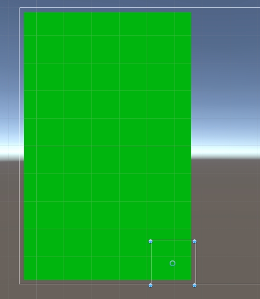

Unity Note
Table of Contents
- UI
- UI How Tos
- Scripts
- Scene
- Object
- GameObject
- Transform
- RectTransform
- Matrix4x4
- Quaternion Euler
- MonoBehavior
- Resource
- Animator Animation Avatar
- Attributes
- Ray
- Sprite SpriteAtlas
- Coroutine
- Dir File Path
- Camera
- Mesh MeshRenderer SkinnedMeshRenderer
- Lod LodGroup
- Materials
- Graphics
- Screen And Resolution
- Misc
- Editor
- Usage
- Optimize
- Optimizing Graphics Performance
- where are the graphics costs
- CPU optimization
- GPU: Optimizing Model Geometry
- Lighting Performance
- GPU: Texture Compression and Mipmaps
- LOD and Per-Layer Cull Distances
- Realtime Shadows
- GPU: Tips for writing high-performance shaders
- Simple Checklist to make Your Game Faster
- 在 PC 平台下，依据目标 GPU 不同，保持每帧的顶点数目低于 200k 到 3M
- 如果你使用内置着色器，请选择移动平台类型或无光照类型。他们可以在非移动平台上也可以很好的运行；他们只是更复杂的着色器的简化版和近似版。
- 保持每个场景中不同材质的数目比较少，尽量在多个不同的物体之间共享材质。
- 为不移动的物体设置静态属性，从而允许静态批处理等内部优化。
- 不要使用不必要的像素光照，应该选择只有一个像素光照可以影响你的几何体。
- 不要使用不必要的动态光照，应该选择烘焙光照来代替。
- 如果可以的话尽量使用压缩格式的贴图，另外和 32 位贴图相比优先选择 16 位贴图格式。
- 不要使用不必要的雾效果。
- 了解遮挡剔除的好处，在有很多遮挡的静态场景的情况下，使用它来减低可见几何体和 draw calls 的数量.规划你的场景从遮挡剔除中获益。
- 使用天空盒来伪造远处的几何体。
- 使用像素着色器或贴图组合器来混合多个贴图从而代替多个阶段的处理。
- 如果编写自定的着色器，应该总是尽可能使用最小的浮点数格式：
- 在像素着色器中，最小化使用复杂的数学运算，例如 pow sin cos 等等。
- 对于每个片段，尽可能使用少的贴图。
- Draw Call Batching
- Modeling characters for optimal performance
- Optimizing Shader Load Time
- Optimizing Graphics Performance
- Android Platform
- Q&A
该文章记录了翻译的 Unity 官方文档，以及学习过程中总结的文档
相关代码放在: https://github.com/wolfand11/StudyProjects/tree/master/SDK/Unity
UI
Canvas
Canvas 是一个区域，所有的 UI 元素必须在其中。Canvas 是包含一个 Canvas 组件的 GameObject。所有的 UI 元素必须是这个 Canvas 的子节点。
元素的渲染次序
UI 元素在 Canvas 中的渲染次序，和他们在 Hierarchy 中的次序一致。第一个子节点先渲染，第二个子节点次之，等等。当两个 UI 元素重叠时，后面渲染的 UI 元素将出现在前面渲染的 UI 元素上面。通过改变 UI 元素在 Hierarchy 视图中的位置来改变他们的渲染顺序。
渲染模式
ScreenSpace-Overlay 渲染模式将被渲染的 UI 元素放在场景最上面的屏幕上。如果屏幕尺寸或分辨率改变，Canvas 将会自动改尺寸来适配屏幕。
ScreenSpace-Camera 渲染模式和 ScreenSpace-Overlay 渲染模式类似，但是 Canvas 被放置在一个特定的摄像机前的指定距离处。UI 元素被该摄像机渲染，也就是说摄像机的设置会影响 UI 的显示效果。如果摄像机被设置为透视投影，透视的扭曲量可通过 Camera 的 Field Of View 来控制。
WorldSpace 渲染模式下，Canvas 就像任何场景中的物体一样。Canvas 的大小可以被手动设置，UI 元素会被基于他们的 3D 位置而绘制。
实例说明
UI/Scenes/UICanvas 中，改变屏幕大小，ScreenSpace-Overlay 和 ScreenSpace-Camera 模式下的文字大小不会改变，Canvas 的尺寸会随着屏幕大小而调整。WorldSpace 模式下的文字大小会改变，Canvas 的尺寸不会随屏幕大小而改变。
Basic Layout
Rect Transform
Rect Transform 是专门针对 UI 开发的用来代替 Transform 的。Rect Transform 比 Transform 要多 width 和 height 两个属性，来指定一个矩形区域。
对于包含 RectTransform 属性的游戏对象，Rect Tool 在改变尺寸时，会改变 RectTransform 的 size 大小。对于不包含 RectTransform 属性的游戏对象（如 Sprite），Rect Tool 改变的是游戏对象的 Scale。
Pivot
中心点会影响缩放、旋转、改变尺寸的结果。其实就是节点自身的锚点。会影响 localPosition 的值。
Anchors
如果 Rect Transform 的父节点也是个 RectTransform，那么子节点可以通过多种方式 anchored 到父节点上。(其实，Anchors 定义了一个相对于父节点矩形的 Anchor 矩形区域-AnchorRect。)
PosX PosY Width Height
当 Anchors 重合时，PosX PosY 表示 Pivot 相对于 Anchors 的位置,Width Height 表示矩形区域的宽高。
当 Anchors 在水平方向上重合，在竖直方向上分开时，PosX 表示 Pivot 相对于 Anchors 的水平位置，Width 表示矩形区域的宽。PosY 变为了 Top，表示中心点相对于 Anchors 最上面的距离，Height 变为了 Bottom 表示中心点相对于 Anchors 最下面的距离。
当 Anchors 全部分开后，属性变为了 Left Right Top Bottom，分别表示节点的 Rect 相对于 AnchorRect 的位置。
按照父节点尺寸的百分比设置 RectTransform 的尺寸
通过设置 RectTransform 的 Achors，以及 Left Top Right Bottom 来实现该功能。
如下图所示，设置当前 RectTransform 的尺寸为 parentSize * Size(0.3,1) - 10 -10:
按照百分比设置子节点的位置
通过设置子节点 RectTransform 的 Achors，以及 PosX PosY Pivot 来实现该功能。
如下图所示，设置 子节点的位置为 parentSize * (1,0) - (10,10): 当前选中的节点为子节点，绿色的背景为父节点

Blue 模式和 Raw 编辑模式
Blue 模式下，会忽略 UI 元素的 Local Rotation 和 Local Scale，方便以原來的旋转和大小调整物体。
Raw 模式下，调整 Pivot 和 Anchors 时会保持 UI 元素的位置和大小。
Script 中常用属性和方法
rectTransform.rect
rectTransform.rect 该属性返回表示当前 UI 元素的矩形区域，position 表示矩形左下的坐标（基于当前 UI 元素的本地坐标），size 表示矩形区域的尺寸。
rectTransform.TransformPoint
rectTransform.TransformPoint(pos)可以将 UI 元素的本地坐标转换为世界坐标。
rectTransform 属性设置
在脚本中设置 rectTransform 属性时，先将 rectTransform 所属的 GameObject 加到场景中，然后再设置 rectTransform 相关的属性，否则 GameObject 在加入场景时会修改 RectTransform 的属性。
// 下面代码可以将一个 RectTransform 设置为其父节点大小，中心和其父节点重合
public static void ResetRectToFullScreenAndInMiddle (RectTransform rectTransform)
{
if (rectTransform != null) {
rectTransform.pivot = new Vector2 (0.5f, 0.5f);
rectTransform.localScale = Vector3.one;
rectTransform.anchorMin = Vector2.zero;
rectTransform.anchorMax = Vector2.one;
rectTransform.sizeDelta = Vector2.zero;
rectTransform.localPosition = Vector3.zero;
}
}
Visual Components
Text
Best Fit 选项会修改文字的尺寸来适应可显示的区域。
Image
ImageType 选项定义了被应用的 Sprite 如何显示:
Simple 表示均等地缩放整个 sprite;
Sliced 表示使用 3x3 分割的 Sprite，当修改尺寸时，四个角不会扭曲变形，只有中间的部分会缩放;
Tiled 和 Sliced 类似，但是它不会缩放中心的内容，它是重复中心的内容;
Filled 和 Simple 一样的方式显示 Sprite，只是它会从原点开始以指定的方向、方法以及总量来显示图片。
选择 Simple 或 Filled 时，可以通过 Set Native Size 将 Image 的大小设置为原始图片的大小。
Mask
Mask 组件不是一个可视化的 UI 控件，但它是控制子 UI 元素显示的一种方式。Mask 会限制子 UI 元素的形状为他们父节点的形状。
Effect
Outline 组件可以为 UI 元素添加描边效果。通过修改 EffectColor 为描边设置颜色，EffectDistance 设置描边的相对位置。
Interaction Components
Selectable Base Class
Selectable 是所有可交互组件的基类，它按照统一的方式来处理元素。
| Property | Function |
|---|---|
| Interactible | 该属性决定了组件是否接受输入。当它被设置为 false 时，交互是不可用的，而且转换状态被设置为 Disable |
| Transition | 对于一个可选中的组件，依据它当前所在状态有很多转换选项。不同的状态包括：normal，highlight,pressed,disabled |
| Navigation | 有一系列的导航选项来控制如何实现键盘导航 |
Button
状态改变触发的 UnityEvent：OnClick
Toggle
将多个 Toggle 的 Group 属性指定相同的包含 ToggleGroup 组件的 GameObject，可将这些 Toggle 指定为一组。
状态改变触发的 UnityEvent：OnValueChanged
Toggle Group
为 GameObject 添加 ToggleGroup 可以分组管理 Toggle。Allow Switch Off 属性表示，点击分组中 On 的 Toggle，该 Toggle 会变为 Off。
Slider
Slider 有一个整型值，拖拉可以在最小和最大范围内改变该值。WholeNumbers 属性可以指定整型值为整数。
状态改变触发的 UnityEvent：OnValueChanged
ScrollBar
ScrollBar 有一个 0 到 1 的整型值。Number Of Steps 属性表示拖动 ScrollBar 从 0 变为 1 一共需要多少个 Step，该值为 0 时，ScrollBar 的拖动是平滑的。
状态改变触发的 UnityEvent：OnValueChanged
Dropdown
状态改变触发的 UnityEvent：OnValueChanged
InputField
ContentType 属性表示输入框内容的类型。Standard、Autocorrected、Integer Number、Decimal Number、Alphanumeric、Name、Email、Password*、Pin、Custom。
OnValueChanged： 输入框中内容改变会触发该 UnityEvent
EndEdit： 编辑完成时会触发该 UnityEvent
ScrollRect(ScrollView)
Horizontal 选项控制是否可以在水平方向滑动。
Vertical 选项控制是否可以在竖直方向滑动
MovementType 选项控制移动的类型，Unrestricted 表示不限制滑动范围；Clamped 表示限制滑动范围；Elastic 表示限制滑动范围，并且滑出范围后会自动回弹回来。
ScrollRect 下的子节点 Viewport 用来控制显示区域，Viewport 上有一个 Mask 组件。Viewport 下的子节点 Content 用来放置滑动区域内要显示的内容。
Vertical/Horizontal ScrollBar 属性用来绑定 ScrollRect 和 ScrollBar。
OnValueChanged：滑动位置改变后触发该 UnityEvent
Animation Integration
点击控件属性面板中的 Auto Generate Animation 按钮，可以为该控件生成相关动画配置。
选中 Animation 对象，在 Inspector 面板中有 LoopTime 选项可以控制是否循环播放动画。
Tips:
UI 的 Animation 变换模式和 Unity 遗弃的动画系统是不兼容的。只能使用 Animator 组件。
Auto Layout
自动布局系统提供了很多方式将元素放置在嵌套的布局分组中，例如 horizontal groups,vertical groups,grids。它允许元素依据其包含的内容自动地改变大小。自动布局系统是以 RectTransform 为基础构建的。
Layout Element
自动布局系统是基于布局元素和布局控制器的。一个布局元素是包含 RectTransform 组件的一个游戏对象，当然这个游戏对象可以包含其他任何组件。布局元素知道它自己的大小。布局元素不会直接设置自己的大小，但是其他的就像布局控制功能的组件可以利用布局元素提供的信息来计算出一个尺寸大小让其使用。
一个布局元素定义了下面的属性：Minimum width、Minimum height、Preferred width、Preferred height、Flexible width、Flexible height。
Layout Controller 使用 Layout elements 提供的信息的例子是 Content Size Fitter 和各种 Layout Group 组件。修改 layout group 中 layout elements 尺寸遵从下面原则：首先会分配最小的尺寸；如果还有足够的空间，就分配 PreferredSize;如果还有额外的空间可用，就分配 flexible size。
任何包含 RectTransform 的游戏对象都可以被当做一个布局元素。它们的默认 mininum、prefered、和 flexible 尺寸为 0.特定的组件加到该游戏对象上时会改变这些布局属性的值。例如，Image 和 Text 组件会修改 preferred width 和 height 来匹配 sprite 和 text 的内容。
如果你想覆盖一个游戏对象的布局属性（minimum, preferred, or flexible size),你可以为该游戏对象添加一个 Layout Element 组件。
Layout Controller
Layout Controller 组件可以用来控制一个过多个 Layout Element 的尺寸和位置。一个 Layout Controller 可以控制它自己所在的 GameObject 的 Layout Element 也可以控制子节点的 Layout Element。
一个功能为 LayoutController 的组件其功能同时可以为 Layout Element.
Content Size Fitter
Content Size Fitter 的功能是控制它自己所在 GameObject 的 LayoutElement。如果将 Horizontal Fit 或 Vertical Fit 设置为 Preferred, Rect Transform 将会调整它自己的 width and/or height 来适应内容的大小.
Aspect Ratio Fitter
Aspect Ratio Fitter 的功能是控制它自己所在 GameObject 的 LayoutElement 的 Size。
Aspect Mode 选项控制如何改变矩形尺寸来满足特定纵横比。
| 属性 | 功能 |
|---|---|
| None | 矩形不必符合指定宽高比 |
| Width Controls Height | 高度基于宽度来自动调整 |
| Height Controls Width | 宽度基于高度自动调整 |
| Fit In Parent | 宽度、高度、位置、锚点自动基于父节点调整， 使矩形在父节点内并且保持指定宽高比，这会让有些在父节点内的空间没有被当前节点的矩形所覆盖。 |
| Envelope Parent | 宽度、高度、位置、锚点自动基于父节点调整，使矩形覆盖父节点的整个区域且保持特定宽高比，这会让当前节点的矩形超出父节点的范围。 |
Aspect Ratio 选项用来设置 width/height 的比值。
Layout Groups
作为 layout controller 的 layout group，它的作用是控制子 layout elements 的位置和尺寸。
一个 layout group 不会控制自己的尺寸。它作为一个 layout element 可以被其他 layout controller 控制或者是手动设置。
无论一个 layout group 分配了多大尺寸，它都会尽力为每一个子 layout element 分配合适的空间。layout group 可以以任意的方式嵌套。
Driven Rect Transform properties
因为自动布局系统中的 layout controller 会自动控制某些 UI 元素的尺寸和位置，所以不要手动编辑他们的尺寸和位置，否则，这些改变会被 layout controller 的自动布局重置。
Rect Transform 有一个属性驱动的概念来达到上面的目的。例如，ContentSizeFitter 有 HorizontalFit 属性来设置使用 Minimum 还是 Preferred 来控制 GameObject 的 RectTransform 的宽度，选择其中一个就会让 Rect Transform 的 width 属性变为只读。
属性驱动还可以防止手动的编辑。一个布局可以只随 GameView 的分辨率或尺寸而变化。这改变驱动属性的值，反过来又会修改 layout element 的位置和尺寸。但是，只改变 GameView 的大小不应该将 Scene 标记为未保存的。为了避免这样，驱动值不会作为 Scene 的部分被保存，驱动值的改动不会标记场景是否修改。
Technical Details
自动布局系统来自内置的某些组件，但是也可以创建新的组件来实现自定义的布局控制。可以通过实现自动布局系统可识别的特定接口来创建这样的组件。
Layout Interfaces
如果一个组件实现了 ILayoutElement 接口，它就会被自动布局系统当做一个 layout element。
如果一个组件实现了 ILayoutGroup 接口，它被认为用来管理子节点的 RectTransforms。
如果一个组件实现了 ILayoutSelfController 接口，它被认为用来管理自己的 RectTransform。
Layout Calculations
自动布局系统安装下面的顺序来计算和执行布局：
1 通过调用 ILayoutElement 的 CalculateLayoutInputHorizontal 方法来计算 layout element 的 minimum,preferred,flexible widths。这是按照从下到上的顺序执行的，子节点会比他们的父节点先计算，这样父节点就可以在它的计算中获得它的子节点的信息。
2 layout element 的有效宽度会被计算，并且通过 ILayoutController 的 SetLayoutHorizontal 方法进行设置。这是按照从上到下的顺序进行的，子节点会比他们的父节点晚计算，因为子节点宽度的分配会基于父节点的整个宽度大小。这个步骤之后，layout elements 就会有他们新的宽度。
3 通过调用 ILayoutElement 的 CalculateLayoutInputVertical 方法来计算 layout element 的 minimum,preferred,flexible heights.这是按照从下到上的顺序执行的，子节点会比他们的父节点先计算，这样父节点就可以在它的计算中获得它的子节点的信息。
4 layout element 的有效高度会被计算，并且通过 ILayoutController 的 SetLayoutVertical 方法进行设置。这是按照从上到下的顺序进行的，子节点会比他们的父节点晚计算，因为子节点宽度的分配会基于父节点的整个高度大小。这个步骤之后，layout elements 就会有他们新的高度。
从上面可以看出，自动布局系统会先计算宽度，后计算高度，所以高度计算可以依赖宽度，但是宽度计算永远不能依赖高度。
Triggering Layout Rebuild
当组件的属性被修改引起当前的布局不可用时，需要对布局进行重新计算。可以通过下面的调用来触发布局的重新计算：
LayoutRebuilder.MarkLayoutForRebuild (transform as RectTransform);
这个重新构建不会立刻执行，而是在当前帧的最后，在渲染发生之前执行。不立即执行的原因是在一帧内可能会重建多次，如果每次都立即执行，会导致明显的性能下降。
通常需要在下面这些地方触发布局的重新计算:
在可以修改布局的属性设置函数中。
在下面这些回调函数中：
OnEnable
OnDisable
OnRectTransformDimensionsChange
OnValidate (only needed in the editor, not at runtime)
OnDidApplyAnimationProperties
UI How Tos
Designing UI for Multiple Resolutions
通过 Anchors 和 Canvas Scaler 来实现多分辨率适配。Anhors 可以处理 UI 元素的相对位置，CanvasScaler 用来处理 UI 元素的大小。
Canvas Scaler
CanvasScaler 组件用来控制 Canvas 上 UI 元素的像素密度和总体的缩放。这个缩放会影响到 Canvas 下的所有 UI 元素，包括字体的大小，和 Sprite 的边框。
UI Scale Mode 选项用来控制 UI 元素如何被缩放。
| ModeType | 功能 |
|---|---|
| Constant Pixel Size | 不考虑屏幕尺寸，UI 元素的尺寸保持和像素大小一样 |
| Scale With Screen Size | 使 UI 元素在大的屏幕上变大 |
| Constant Physical Size | 不考虑屏幕尺寸和分辨率大小，UI 元素保持物理尺寸 |
Constant Pixel Size 缩放模式的参数：
| ArgName | 说明 |
|---|---|
| Scale Factor | 按照该缩放值缩放所有 Canvas 下的 UI 元素. |
| Reference Pixels Per Unit | 如果 Sprite 有 ‘Pixels Per Unit’ 设置,Sprite 中的一个像素就会占 UI 中的一个单位 |
Scale With Screen Size 缩放模式的参数：
| ArgName | 说明 |
|---|---|
| Reference Resolution | UI 布局的设计分辨率.如果屏幕分辨率更大（更小），则 UI 将被放大（缩小） |
| Screen Match Mode | 如果当前分辨率和 Reference 分辨率纵横比不一致，该参数用来指定缩放如何缩放 Canvas 的区域 |
| 1 Match Width or Height | 以 width 或 height 或他们之间的值为依据缩放 canvas 区域 |
| 2 Expand | 在水平或竖直方向上扩展 canvas 区域，从而让 canvas 区域比 reference 区域大 |
| 3 Shrink | 在水平或竖直方向上裁剪 canvas 区域，从而让 canvas 区域比 reference 区域小 |
| Reference Pixels Per Unit | 如果一个 Sprite 有 ‘Pixels Per Unit’设置,Sprite 中的一个像素就会占用 UI 中的一个单位 |
当 ScreenMatchMode 选用 Match Width or Height 时，会有 Match 选项可供调节，它用来确定依据 width 还是 height 或者是他们之间的一个值来缩放 canvas 的区域。
Constant Physical Size 缩放模式的参数:
| ArgName | 说明 |
|---|---|
| Physical Unit | 用来指定位置和尺寸使用的物理单位 |
| Fallback Screen DPI | 如果屏幕的 DPI 不可知，则假定其 DPI 为该选项设置的值 |
| Default Sprite DPI | 有‘Pixels Per Unit’配置的 Sprites 使用的每英寸像素数目将匹配‘Reference Pixels Per Unit’配置 |
| Reference Pixels Per Unit | 如果 Sprite 有‘Pixels Per Unit’设置, 则它的 DPI 将匹配‘Default Sprite DPI’设置 |
World Space Canvas 缩放模式的参数(当将 Canvas 的渲染模式设置为 WorldSpace 时会显示):
| ArgName | 说明 |
|---|---|
| Dynamic Pixels Per Unit | 在 UI 中动态创建 bitmaps 时（例如创建 Text），每个单位用到的像素数目。 |
| Reference Pixels Per Unit | 如果 Sprite 有‘Pixels Per Unit’配置,Sprite 中的每个像素会占用世界中的一个单元。如果‘Reference Pixels Per Unit’被设置为 1,Sprite 的‘Pixels Per Unit’配置将按原样使用 |
Tips:
CanvasScaler 是通过修改 Canvas 的缩放值来实现缩放的。该缩放值可通过下面的方式获得：
需要注意的是，CanvasScaler 的 scaleFactor 属性和 Canvas 的 scaleFactor 并不是同一个值。CanvasScaler 的 scaleFactor 表示在 Constant Pixel Size 模式下 UI 元素的缩放值。而 Canvas 得 scaleFactor 表示无论什么模式下，当前 Canvas 的缩放值。
GetComponentInParent<Canvas> ().scaleFactor;
Screen And Reference Resolution
Screen.width 表示当前视图的像素宽度
Screen.height 表示当前视图的像素高度
Screen.resolutions 表示显示设备支持的所有全屏的分辨率
Screen.currentResolution 表示显示设备当前全屏的分辨率
// 下面打印出了 Screen.currentResolution 和 Screen.resolutions 的内容： Screen.currentResolution = 1280 x 800 @ 0Hz Screen.resolutions = 640 x 480 @ 0Hz Screen.resolutions = 720 x 480 @ 0Hz Screen.resolutions = 800 x 500 @ 0Hz Screen.resolutions = 800 x 600 @ 0Hz Screen.resolutions = 1024 x 640 @ 0Hz Screen.resolutions = 1024 x 768 @ 0Hz Screen.resolutions = 1152 x 720 @ 0Hz Screen.resolutions = 1280 x 800 @ 0Hz
可以通过下面的方法来获取 ReferenceResolution
public static Vector2 GetCanvasReferenceResolution (GameObject gObj)
{
CanvasScaler scaler = GUtility.GetComponentInSelfAndParent<CanvasScaler> (gObj);
return scaler.referenceResolution;
}
Toggle 使用方法
Scripts
Scene
SceneManager.SceneManager.GetActiveScene().GetRootGameObjects()不会返回被标记为不被销毁的对象。
Object
Object 中的几个静态方法。
| Name | 功能 |
|---|---|
| Destroy | 删除一个 游戏对象 或 组件 或 资源 . |
| DestroyImmediate | 立即删除对象. 强烈建议使用 Destroy 代替此方法. |
| DontDestroyOnLoad | 在加载一个新场景时，该对象不被自动销毁 |
| FindObjectOfType | 返回第一个被加载的 激活的 Type 类型的对象. |
| FindObjectsOfType | 返回所有被加载的 激活的 Type 类型的对象. |
| Instantiate | 克隆原始对象并返回克隆体. |
Destroy
- 调用 Destroy 后，会先调用被删除对象的 OnDisable 然后再调用 OnDestroy
- 如果 Object.Destroy(obj)中的 obj 为组件，会先将该组件从 GameObject 上移除，然后销毁该组件；如果 obj 为一个 GameObject，会删除该游戏对象、它的所有组件、以及它 transform 中记录的所有子节点。
- 调用 Destory 后，并不会立即销毁对象，会延迟到当前 Update 执行结束以后，但在渲染之前会销毁。
如果在 OnEnable 中调用 Destroy，会立即触发 OnDisable 方法，但是不会立即触发 OnDestroy 方法， 当前所有对象 的 OnEnable 执行结束后才调用 OnDestroy。
如果在 Start 中调用 Destroy，会立即触发 OnDisable 方法，但是不会立即触发 OnDestroy 方法， 当前所有对象 的 Start 执行结束后才调用 OnDestroy。
如果在 Update 中调用 Destory，会立即触发 OnDisable 方法，但是不会立即触发 OnDestroy 方法， 当前所有对象 的 Update 执行结束后才调用 OnDestroy。
如果在 LateUpdate 中调用 Destroy，会立即触发 OnDisable 方法，但是不会立即触发 OnDestroy 方法， 当前所有对象 的 LateUpdate 执行结束后才调用 OnDestroy。
如果在 OnPostRender 中调用 Destroy，会立即触发 OnDisable 方法，但是不会立即触发 OnDestroy 方法， 当前对象 的 OnPostRender 执行结束后才调用 OnDestroy。
DontDestroyOnLoad
DontDestroyOnLoad 只对场景中的 Root GameObjects 或他们上的组件有效。
创建一个空对象，然后对其调用 DontDestroyOnLoad 可以将该对象变为当前场景的 Root GameObject。
GameObject
GameObject.Find(string childName) 静态成员方法
- 需要注意的是该方法会循环查找整个场景树的节点(根节点和子节点都会查找)。找到第一个名称为 childName 的节点。
- 该方法会返回标记为不被销毁的对象。
- 该方法只返回被激活的对象，如果 gameObject 没有被激活，则不会返回。
GetComponent GetComponents
GameObject 定义的其他成员方法
| Name | 功能 |
|---|---|
| AddComponent | 添加一个类名称为 className 的组件到当前对象上. |
| BroadcastMessage | 调用当前对象以及其子对象上每个 MonoBehavior 上的名字单位 methodName 的方法 |
| CompareTag | 判断 gameObject 的 tag 与参数的 tag 相同 ? |
| GetComponent | 获取当前对象的指定类型的组件,不存在返回 null |
| GetComponentInChildren | 获取当前对象或其子对象的指定类型的组件，不存在返回 null（遍历行为是以深度为优先的） |
| GetComponentInParent | 获取当前对象或其父对象的指定类型的组件，不存在返回 null |
| GetComponents | 获取当前对象的所有组件 |
| GetComponentsInChildren | 获取当前对象或其子对象的指定类型的所有组件。 |
| GetComponentsInParent | 获取当前对象或其父对象的指定类型的所有组件。 |
| SendMessage | 调用当前对象上每个 MonoBehavior 上的名字为 methodName 的方法 |
| SendMessageUpwards | 调用当前对象以及其父对象上每个 MonoBehavior 上的名字单位 methodName 的方法 |
| SetActive | 激活/不激活 当前对象 |
Tips:
GetComponentInChildren(Type compType);
GetComponentsInChildren(Type compType);
GetComponentInParent(Type compType);
GetComponentsInParent(Type compType);
需要注意的是
1 上面 4 个方法会先在当前对象中寻找 CompType 类型的组件。
2 方面 4 个方法会循环查找所有子节点或父节点
GameObject 和 Transform
new 出来的 GameObject 对象会自带一个 Transform 组件
var obj = new GameObject(); if (obj.transform!=null) { Debug.Log("exist transform"); } else { Debug.Log("not exist"); } // 上面的代码会输出 exist transform
Get all DontDestroyOnLoad GameObjects
无论是编辑器版还是 App 版都无法通过下面代码获取所有的 DontDestroyOnLoad GameObject
private void DestroyDontDestroyOnLoadGameObjects() { // 提示无法找到 DontDestroyOnLoad 场景 var dontDestoyOnLoadScene = SceneManager.GetSceneByName("DontDestroyOnLoad"); var dontDestroyOnLoadGameObjects = dontDestoyOnLoadScene.GetRootGameObjects(); foreach (var dontdestroyGameObject in dontDestroyOnLoadGameObjects) { Destroy(gameObject); } }
在编辑器模式下可以使用如下代码来获取所有 DontDestroyOnLoad GameObject
public void DestroyAllDontDestroyOnLoadObjects() { var go = new GameObject("Sacrificial Lamb"); DontDestroyOnLoad(go); foreach(var root in go.scene.GetRootGameObjects()) Destroy(root); }
在 App 版中，可以使用如下方法
public static class DontDestroyOnLoadManager { static List<GameObject> _ddolObjects = new List<GameObject>(); public static void DontDestroyOnLoad(this GameObject go) { UnityEngine.Object.DontDestroyOnLoad(go); _ddolObjects.Add(go); } public static void DestroyAll() { foreach(var go in _ddolObjects) if(go != null) UnityEngine.Object.Destroy(go); _ddolObjects.Clear(); } }
Transform
transform.Find(string childName)
- Find 方法不是递归查找子节点的，它只查询直接子节点(不会查找自己)。
- Find 方法可以传递子节点的相对路径 例如：“child1/child1_1”
- Find 方法可以返回没有被激活的子节点
transform.root
该方法返回 transform 的 Root 节点。
/* UIScene 中的结构如下 -Canvas --MainUI ---PlayerIcon PlayerIcon.transform.root 返回的是 Canvas */
设置节点关系
SetAsFirstSibling 将 transform 放置到本地 transform 列表最前。
SetAsLastSibling 将 transform 放置到本地 transform 列表最后。
SetParent 将 transfrom 设置为当前 transform 的父节点.
SetParent(parentTransform,worldPositionStays)
需要注意下面几点：
- 该方法为 Transform 对象的方法，GameObject 没有该方法
- 该方法的第一个参数必须为 Transform 对象，不能为 GameObject
- 该方法的第二个参数默认值为 True，表示对象世界坐标不变，此时对象的 localPosition、localScale、localEulerAngles 可能是会被改变
GetComponent(s) GetComponent(s)InChildren GetComponent(s)InParent
- Component 类和 GameObject 类都有 GetComponent 方法
NGUI 中有如下继承关系 UIWidget->UIBasicSprite->UISprite，如果 GameObject 上绑定的组件中只有 Transform、UISprite，那么 GetComponent<UIWidget>()可以返回其上的 UISprite 组件。
var widget = GetComponent<UIWidget>(); if ( widget != null ) { Debug.Log ( "从 UIImage 上获取 UIWidget 成功 --- " + widget.ToString ( ) ); } else { Debug.Log ( "从 UIImage 上获取 UIWidget 失败 " ); } // 上面的代码会输出： // 从 UIImage 上获取 UIWidget 成功 --- Sprite (UISprite)
遍历 GameObject 上的所有组件
// 下面两种效果是一样的 foreach (var t in gameObject.GetComponents(typeof(Component))) { Debug.Log (t.ToString( )); } foreach (var t in this.GetComponents<Component>( )) { Debug.Log (t.ToString( )); }
- GetComponentInChildren(Type t) GetComponentInParent(Type t) 只返回激活状态的 GameObject 上的组件
- GetComponentsInChildren(Type t, bool includeInactive=false) GetComponentsInParent(Type t, bool includeInactive=false) 该函数会返回自己
Vector2.Angle Vector2.SignedAngle
该函数只会返回正值
Vector2 originDir = new Vector2(0, 1); Vector2 targetDir = new Vector2(1, 0); Debug.Log("y->x " + Vector2.Angle(originDir, targetDir).ToString()); targetDir = new Vector2(-1, 0); Debug.Log("y->-x " + Vector2.Angle(originDir, targetDir).ToString()); targetDir = new Vector2(0, -1); Debug.Log("y->-y " + Vector2.Angle(originDir, targetDir).ToString()); // 下面是输出结果： // y->x 90 // y->-x 90 // y->-y 180 // 下面的代码是错误的 ERROR 应该使用 Vector2.SignedAngle 来获取正确的带符号的旋转角度 float rotation = Vector2.Angle(originDir,targetDir); if (targetDir.x < originDir.x) { rotation = -rotation; } //在 Unity 中 正的旋转度数表示 沿着旋转轴的方向看 是逆时针旋转，沿着旋转轴的反方向看 是 顺时针旋转。
transform.localEulerAngles
unity 为左手坐标系，所以旋转的正方向通过左手原则来定
transform.localEulerAngles.x 表示绕 x 轴旋转的角度
transform.localEulerAngles.y 表示绕 y 轴旋转的角度
transform.localEulerAngles.z 表示绕 z 轴旋转的角度
transform.localEulerAngles 与 transfrom.localRotation.eulerAngles
这个两个属性获得的值是相等的。
transform.LookAt
public void LookAt(Transform target, Vector3 worldUp = Vector3.up);
public void LookAt(Vector3 worldPosition, Vector3 worldUp = Vector3.up);
// 设置 gObj 朝向前方向上 30 度方向 Vector3 dir = new Vector3(Math.Cos(30*Math.PI/180),Math.Cin(30*Math.PI/180),0); gObj.transfrom.LookAt(Transform.TransformDirection(dir));
遍历子节点
遍历直接子节点
// 下面两种遍历方法是等价的 foreach(Transform trans in transform) { Debug.Log("---> " + trans.name); } // transform.childCount disabled 状态的子节点也包含在内 for(var i=0; i<transform.childCount; i++) { Debug.Log("---> " + transform.GetChild(i).name); }
遍历所有子节点
// 该方法会返回自己, 自己为第一个 foreach(var trans in GetComponentsInChildren<Transform>(true)) { Debug.Log("child = " + trans.name); }
RectTransform
请参考下面链接内容：
No description for this link
Matrix4x4
unity 中的矩阵是列主序的，采用矩阵左乘法。
Matrix4x4.TRS
Vector3 pos = new Vector3(10, 5, 20); // TRS 表示先缩放后旋转再位移 Vector3 newPos1 = Matrix4x4.TRS(new Vector3(5,10,-5), Quaternion.Euler(45,45,45), Vector3.one).MultiplyPoint(pos); Vector3 newPos2 = (Matrix4x4.Translate(new Vector3(5, 10, -5)) * Matrix4x4.Rotate(Quaternion.Euler(45, 45, 45))).MultiplyPoint(pos); Debug.Log("newPos1==newPos2 " + (newPos1==newPos2)); // 输出 True
将 Matrix4x4 分解为 Translate Rotation Scale 矩阵
Matrix4x4[] bparr = smr.sharedMesh.bindposes; Matrix4x4 l2p = bparr[testBoneParentIdx] * bparr[testBoneIdx].inverse; Matrix4x4 p2l = l2p.inverse; Matrix4x4 p2lS = Matrix4x4.Scale(p2l.lossyScale); Matrix4x4 p2lR = Matrix4x4.Rotate(p2l.rotation); Matrix4x4 p2lT = p2l * p2lS.inverse * p2lR.inverse;
Quaternion Euler
Quaternion 的结合性
// 先按照 a 旋转，然后按照 b 旋转，可以得到 c 表示的旋转 Quaternion c = a * b; Debug.Log("c = " + c.eulerAngles); // Quaternion 的乘积运算复合结合律 Quaternion d = a * b * c = a * (b * c);
欧拉角旋转
术语
- Yaw 偏航角，绕 Y 轴旋转
- Pitch 俯仰角，绕 X 轴旋转
- Roll 翻滚角，绕 Z 轴旋转
localEulerAngle
transform.localEulerAngle 返回的是 0-360 范围内的值。在执行旋转角度叠加时，为了支持负数角度，应该将角度范围转换到[-180,180]。
localEulerAngle 表示将父节点的坐标轴按照 先围绕父节点的坐标系的 z 轴旋转 localEulerAngle.z，然后绕父节点坐标系的 x 轴旋转 localEulerAngle.x，最后绕父节点坐标系的 y 轴旋转 localEulerAngle.y.
为什么修改 localEulerAngle.xyz 中的一个另外两个保持为 0 时，始终都是围绕本地对应坐标轴旋转？
当 localEulerAngle 的三个分量 x,y,z 中其中两个保持为 0，修改另外一个时，始终都是围绕父节点的对应坐标轴旋转，而此时本地坐标轴和父节点坐标轴是一致的，所以同时也围绕本地对应坐标轴旋转。
为什么修改 localEulerAngle.z 时，始终都是围绕本地 z 轴旋转？
当 localEulerAngle 的三个分量中 x,y 固定不变(其值可以为除 90 度以外的任意值)，修改 z 时，因为 x,y 固定不变，先绕父节点坐标系的 z 轴旋转 localEulerAngle.z 后，并不会改变本地坐标系中 z 的方向，随后绕父节点坐标系进行 x 轴方向和 y 轴方向的旋转值固定的话，本地坐标系的 z 轴方向变化是相同的。所以，保持 x，y 固定，修改 z，始终都是围绕本地 z 轴旋转。
旋转向量
Vector2 dir = new Vector2(1, 0); Debug.Log("old dir = " + dir); // 朝向 z 轴正方向观察时，逆时针旋转为正 dir = Quaternion.Euler(0, 0, 90) * dir; Debug.Log("new dir = " + dir); // old dir = (1,0) // new dir = (0,1)
旋转的差和叠加
Quaternion a = Quaternion.Euler(30, 30, 0); Quaternion b = Quaternion.Euler(10, 10, 30); // 旋转的叠加 // 先按照 a 旋转，然后按照 b 旋转，可以得到 c 表示的旋转 Quaternion c = a * b; Debug.Log("c = " + c.eulerAngles); // 旋转的差 // 先按 c 旋转，然后按照 b 表示的旋转的反向旋转，可以得到 a 表示的旋转 var tA = c * Quaternion.Inverse(b); // 错误的旋转差 var tB = c * Quaternion.Inverse(a); // 旋转的差 // 先按 a 表示的旋转的反向旋转，然后按照 c 旋转，可以得到 b 表示的旋转 var tB1 = Quaternion.Inverse(a) * c; Debug.Log("tA==a " + (tA == a)); // 输出 True Debug.Log("tB==b " + (tB == b)); // 输出 False Debug.Log("tB1==b " + (tB1 == b)); // 输出 True
本地旋转和全局旋转之间的转换 不同坐标系之间旋转的转换
// 将全局坐标系的旋转转化为本地坐标系旋转 // this will transform WorldRotation to Target's local space Quaternion LocalRotation = Quaternion.Inverse(Target.transform.rotation) * WorldRotation; // 将本地旋转转化为全局旋转 Quaternion WorldRot = Target.transform.rotation * LocalRot; // 下面是测试代码 transform 为 testNode1 和 testNode2 共同的父节点 Vector3 pos = new Vector3(10, 5, 20); testNode1 = (Transform)GGameObject.Find(transform, "GObj1", typeof(Transform), true); testNode1.localPosition = pos; testNode2 = (Transform)GGameObject.Find(transform, "GObj2", typeof(Transform), true); testNode2.localPosition = pos; testNode1.localRotation = Quaternion.Euler(15, 10, 40); testNode2.rotation = transform.rotation * Quaternion.Euler(15, 10, 40); Debug.Log("1 testNode1.rotation == testNode2.rotation " + (testNode1.rotation == testNode2.rotation)); // print True testNode1.rotation = transform.rotation * Quaternion.Euler(25, 20, 50); testNode2.localRotation = Quaternion.Inverse(transform.rotation) * testNode1.rotation; Debug.Log("2 testNode1.rotation == testNode2.rotation " + (testNode1.rotation == testNode2.rotation)); // print True testNode1.localRotation *= Quaternion.Euler(15, 10, 40); testNode2.rotation *= Quaternion.Euler(15, 10, 40); Debug.Log("3 testNode1.rotation == testNode2.rotation " + (testNode1.rotation == testNode2.rotation)); // print True
关于 localRotation 和 rotation：下面代码中为什么会输出 True？
该段代码是上面代码的一小部分，完整代码请参考 No description for this link
testNode1.localRotation *= Quaternion.Euler(15, 10, 40); testNode2.rotation *= Quaternion.Euler(15, 10, 40); Debug.Log("3 testNode1.rotation == testNode2.rotation " + (testNode1.rotation == testNode2.rotation)); // print True
绕父节点旋转
子节点的本地坐标系方向不变
var rot = Quaternion.Euler(0, 5 * Time.deltaTime, 0); transform.localPosition = rot * transform.localPosition;
子节点的本地坐标系做对应旋转
如果初始时，子节点 forward 方向指向父节点，则在旋转情况下，子节点 forward 方向也保持指向父节点
var rot = Quaternion.Euler(0, 5 * Time.deltaTime, 0); transform.localPosition = rot * transform.localPosition; transform.localRotation *= rot;
绕本地坐标轴旋转
var rot = Quaternion.AngleAxis(5 * Time.deltaTime, Vector3.up); transform.rotation *= rot; // transform.localRotation *= rot; 使用 localRotation 也可以
MonoBehavior
各种函数函数触发时机
同一个对象上各函数触发顺序
调用顺序如下
OnValidate -> OnValidate-> Awake -> OnEnable -> Start -> FixedUpdate -> Update-> LateUpdate -> (OnPreRender -> OnPostRender -> OnRenderImage) -> OnDisable -> OnDestroy -> OnValidate
- 只有 Camera 下的脚本会触发 OnPreRender -> OnPostRender -> OnRenderImage
- 只有在编辑器模式下才会触发 OnValidate
- 不同摄像机下的脚本中 OnPreRender -> OnPostRender -> OnRenderImage 的触发是连续的，即 A 摄像机脚本中的 OnPreRender -> OnPostRender -> OnRenderImage 都触发完后，才触发 B 摄像机脚本中的这些方法。
Awake 比 标记为 RuntimeInitializeOnLoadMethod 的静态函数先调用
class Test:MonoBehavior { static Test() { // CLR 保证在类的其他操作之前运行静态构造方法。 Debug.Log("Static Constructor----------------------- "); } private void Awake() { Debug.Log("Awake ----------------------------------- "); } [RuntimeInitializeOnLoadMethod] static void Initialize() { Debug.Log("RuntimeInitializeOnLoadMethod ------------ "); } } // 上面的代码 先执行 Awake，后执行 Initialize
public class MonoBehaviourTest : MonoBehaviour { public static int counter = 1; // 脚本实例被加载时调用 // Awake is called when the script instance is being loaded. public void Awake () { GLogUtility.LogInfo (string.Format ("{0} Awake", counter++)); } // 当脚本为 enabled，在任何 Update 方法第一次调用之前，会调用 Start // Start is called on the frame when a script is enabled just before any of // the Update methods is called the first time. public void Start () { GLogUtility.LogInfo (string.Format ("{0} Start", counter++)); } // 重置默认值，将脚本组件删除，再添加时会调用 // Reset to default values. public void Reset () { GLogUtility.LogInfo (string.Format ("{0} Reset", counter++)); } // 当对象变为 enabled 或 active 时，调用 OnEnable //This function is called when the object becomes enabled and active. public void OnEnable () { GLogUtility.LogInfo (string.Format ("{0} OnEnable", counter++)); } // Monobehaviour 变为 Disabled 或 Inactive 时，会调用 OnDisable // This function is called when the behaviour becomes disabled () or inactive. public void OnDisable () { GLogUtility.LogInfo (string.Format ("{0} OnDisable", counter++)); } // MonoBehaviour 被销毁时会调用 OnDestroy // This function is called when the MonoBehaviour will be destroyed. public void OnDestroy () { GLogUtility.LogInfo (string.Format ("{0} OnDestroy", counter++)); } // 当脚本加载 或者 inspector 面板上的值被修改时会调用 OnValidate //This function is called when the script is loaded or a value is //changed in the inspector (Called in the editor only). public void OnValidate () { GLogUtility.LogInfo (string.Format ("{0} OnValidate", counter++)); } // OnPreRender is called before a camera starts rendering the scene. public void OnPreRender () { GLogUtility.LogInfo (string.Format ("{0} OnPreRender", counter++)); } // OnPostRender is called after a camera finished rendering the scene. public void OnPostRender () { GLogUtility.LogInfo (string.Format ("{0} OnPostRender", counter++)); } // OnRenderImage is called after all rendering is complete to render image. public void OnRenderImage (RenderTexture src, RenderTexture dest) { GLogUtility.LogInfo (string.Format ("{0} OnRenderImage", counter++)); } // 如果物体是可见的，每个摄像机触发一次 OnWillRenderObject 的调用 // OnWillRenderObject is called once for each camera if the object is visible. public void OnWillRenderObject () { GLogUtility.LogInfo (string.Format ("{0} OnWillRenderObject", counter++)); } // 当前的 collider/rigidbody 和另外的 collider/rigidbody 开始接触时，会调用 OnCollisionEnter // OnCollisionEnter is called when this collider/rigidbody has begun touching another // rigidbody/collider. public void OnCollisionEnter () { GLogUtility.LogInfo (string.Format ("{0} OnCollisionEnter", counter++)); } // 当前的 collider/rigidbody 和另外的 collider/rigidbody 停止接触时，会调用 OnCollisionExit // OnCollisionExit is called when this collider/rigidbody has stopped touching another // rigidbody/collider. public void OnCollisionExit () { GLogUtility.LogInfo (string.Format ("{0} OnCollisionExit", counter++)); } // 每一个和其他 collider/rigidbody 有接触的 collider/rigidbody 都会在每帧中触发 OnCollisionStay 的调用 // OnCollisionStay is called once per frame for every collider/rigidbody that is touching // rigidbody/collider. public void OnCollisionStay () { GLogUtility.LogInfo (string.Format ("{0} OnCollisionStay", counter++)); } public void OnTriggerEnter () { GLogUtility.LogInfo (string.Format ("{0} OnTriggerEnter", counter++)); } public void OnTriggerExit () { GLogUtility.LogInfo (string.Format ("{0} OnTriggerExit", counter++)); } public void OnTriggerStay () { GLogUtility.LogInfo (string.Format ("{0} OnTriggerStay", counter++)); } // 如果 MonoBehaviour 状态为 enabled，则以固定的帧率调用此函数 //This function is called every fixed framerate frame, if the MonoBehaviour is enabled. public void FixedUpdate () { GLogUtility.LogInfo (string.Format ("{0} FixedUpdate", counter++)); } // 如果 MonoBehaviour 状态为 enabled，则以固定的帧率调用此函数 // Update is called every frame, if the MonoBehaviour is enabled. public void Update () { GLogUtility.LogInfo (string.Format ("{0} Update", counter++)); } // 如果 MonoBehaviour 状态为 enabled，则以每帧都会调用此函数 // LateUpdate is called every frame, if the Behaviour is enabled. public void LateUpdate () { GLogUtility.LogInfo (string.Format ("{0} LateUpdate", counter++)); } }
不同对象各函数触发顺序
- Camera Awake/Enable/Update/LateUpdate 顺序按照 depth 越大越优先
- Camera 渲染顺序按照 depth 越小越优先，即 Camera depth 值小的先触发 OnPreRender -> OnPostRender -> OnRenderImage
- Camera Disable 和 Destroy 执行顺序没有什么规律
- 普通对象和 Camera 的事件触发顺序也没有什么规律
- 只有对象身上有 Mesh 时，才会触发 OnWillRenderObject
场景中有如下对象树，其各个对象的脚本中函数触发如下描述：
场景对象树： Cube2 Camera-depth1 Camera-depth0 Camera-depth2 Cube1 -->Cube1.1 对象函数触发顺序： // -------------------- Cube1.1 -Awake Cube1.1 -OnEnable Cube2 -Awake Cube2 -OnEnable Camera3 -Awake Camera3 -Enable Camera2 -Awake Camera2 -Enable Camera1 -Awake Camera1 -Enable Cube1 -Awake Cube1 -Enable // -------------------- Cube1.1 -Start Cube2 -Start Camera3 -Start Camera2 -Start Camera1 -Start Cube1 -Start // -------------------- Cube1.1 -Update Cube2 -Update Camera3 -Update Camera2 -Update Camera1 -Update Cube1 -Update // -------------------- Cube1.1 -LateUpdate Cube2 -LateUpdate Camera3 -LateUpdate Camera2 -LateUpdate Camera1 -LateUpdate Cube1 -LateUpdate // -------------------- Camera 渲染 Cube1 -OnWillRenderObject Cube2 -OnWillRenderObject Cube1.1 -OnWillRenderObject Camera1 -OnPreRender Camera1 -OnPostRender Camera1 -OnRenderImage Cube1 -OnWillRenderObject Cube2 -OnWillRenderObject Cube1.1 -OnWillRenderObject Camera2 -OnPreRender Camera2 -OnPostRender Camera2 -OnRenderImage Cube1 -OnWillRenderObject Cube2 -OnWillRenderObject Cube1.1 -OnWillRenderObject Camera3 -OnPreRender Camera3 -OnPostRender Camera3 -OnRenderImage // -------------------- Disable 以上节点的父节点 Cube2 -OnDisable Camera3 -OnDisable Camera1 -OnDisable Cube1.1 -OnDisable Cube1 -OnDisable Camera2 -OnDisable // -------------------- 编辑器停止运行 Cube2 -OnDisable Camera3 -OnDisable Camera1 -OnDisable Cube1.1 -OnDisable Cube1 -OnDisable Camera2 -OnDisable Cube2 -OnDestroy Camera3 -OnDestroy Camera1 -OnDestroy Cube1 -OnDestroy Cube1.1 -OnDestroy Camera2 -OnDestroy
单例 MonoBehavior
单例 MonoBehavior 被添加到多个 GameObject 上后，对于每个 GameObject，都分别实例化了一个 MonoBehavior 对象，这些对象和你自己实例化的单例不是同一个对象。
创建 MonoBehavior 单例是不被允许的，会提示下面错误:
You are trying to create a MonoBehaviour using the 'new' keyword. This is not allowed. MonoBehaviours can only be added using AddComponent(). Alternatively, your script can inherit from ScriptableObject or no base class at all
public 变量赋值顺序
public 变量的赋值顺序按照 初始化语句、构造函数、编辑器赋值的顺序。
public class Test:MonoBehaviour { public int value2 = 10; public Test () { Debug.Log ("Test value2 = " + value2.ToString ()); value2 = 11; } void Awake () { Debug.Log ("Awake value2 = " + value2.ToString ()); } void Start () { Debug.Log ("Start value2 = " + value2.ToString ()); } } // Output //Test value2 = 10 //构造函数中读的值为 初始化语句中赋的值 //Awake value2 = 120 //在编辑器中设置了 value2 的值为 120, 所以编辑器赋值在 Awake 之前执行的。 //Start value2 = 120
Resource
Load
需要注意一下两点
1 使用 Resource.Load 时，其中参数不能填写后缀名，否则返回 null.
2 通过 Resource.Load 返回的是 Prefab 本身，需要对其实例化才能使用。否则会报下面的错误
var obj = Resources.Load ("UI/Root_bg") as GameObject; obj.transform.SetParent(rootUI); // 上面代码会引发下面错误 // Setting the parent of a transform which resides in a prefab is disabled to prevent data corruption. // 正确的做法如下： // Instantiate 是 Object 的静态方法 var obj = Instantiate(Resources.Load("UI/Root_bg")) as GameObject; obj.transform.SetParent(rootUI);
Animator Animation Avatar
播放动画控制
循环播放动画
Animation
Normal Loop - 方案 1: 在 AnimationClip 级别上的实现 设置 AnimationClip 的 WrapMode=Loop 设置 Animation 的 WrapMode=Default - 方案 2: 在 Animation 级别上的实现 设置 Animation 的 WrapMode=Loop ClampForever - AnimationClip 的 WrapMode=ClampForever - Animation 的 WrapMode=ClampForever PingPong - AnimationClip 的 WrapMode=PingPong - 设置 Animation 的 WrapMode=PingPong
Animator
Normal Loop - 方案 1: 在 AnimationClip 级别上的实现 勾选 AnimationClip 的 Loop 选项 - 方案 2: 在 AnimationController 级别上的实现 在 AnimationController 中创建两个动画状态: LoopPartA LoopPartB,设置 LoopPartA 可以转换到 LoopPartB，LoopPartB 可以转换到 LoopPartA PingPong: 在 AnimationController 级别上的实现 在 AnimationController 中创建两个动画状态: LoopPartA LoopPartB,设置 LoopPartA 可以转换到 LoopPartB，LoopPartB 可以转换到 LoopPartA,设置 LoopPartB 的 speed=-1
暂停播放 恢复播放
void DoPauseOrResume() { if(animation!=null) { animation[animation.clip.name].speed = IsPause?0:1; } if(animator!=null) { // 方法 1 animator.speed = IsPause?0:1; // 方法 2 animator.SetFloat("InAnimSpeed", IsPause ? 0 : 1); } } // 播放完后停留在第一帧 // 播放完后停留在最后一帧
判断动画是否正在播放 判断动画是否播放完
animation.isPlaying
AnimationClip 为 ClampForever 时，播放完毕该值会一直为 True.
AnimationClip 为 Once Clamp 时，播放完毕该值会为 False.
Animator 中没有判断动画是否在播放的方法.
添加删除动画消息
bool IsExistEvent(AnimationClip clip, string funcName, float time) { foreach(var evt in clip.events) { if(evt.functionName == funcName) { if(Mathf.Abs(time - evt.time) < 0.0001f) { Debug.LogWarning("funcName exist! bug time not equal!"); } return true; } } return false; } bool AddEvent(AnimationClip clip, string funcName, float time=-1) { if(clip==null)return false; if(IsExistEvent())return false; if(time < 0) { // 通过 CrossFade 方式播放动画时，如果 time=clip.length 有时候会无法触发事件 time = clip.length * 0.95; } AnimationEvent evt = new AnimationEvent(); evt.time = time; evt.functionName = funcName; clip.AddEvent(evt); return true; }
Animation
Animator
从某个时间点开始播放动画
动画的整体流程是怎样的？Skinning 是发生在什么时候？
使用 Unity 的 Profiler 工具，添加 CPU Profiler，进行 Profile，然后分析 Timeline 数据，可以看到 Unity 内部函数的调用先后顺序，从而大体上了解 Unity 一帧的执行流程。
表情动画实现
BaseLayer 设置如下：
Mask 设置为空, Blending 类型设置为 Override

NewLayer 设置如下
Mask 设置为 Face(只包含脸部骨架)，Blending 类型设置为 Override，Weight 设置为 1
具体实现可以参考 BaiduYun/UnitySample/ExpAnim
动画中 Rig/Root Node 和 Animation/Motion/RootMotionNode 的差别
通常情况下是逻辑控制角色的 TRS 属性，使用 RootMotion 时，动画会将 RootNode 的 TRS 变化应用到播放动画的节点上，从而实现动画对角色的控制。
Rig/Root Node 用于指定 Generic 模型的 Body Transform，Humanoid 模型的 Body Transform 是在 Avatar Configure 中指定的 Hips 骨骼。
Animation/Motion/RootMotionNode 用于指定特定动画对应的 Root Motion Node，播放该动画时，会完全使用选择的 Root Motion Node 来驱动播放动画的 GameObject。
参考资料
- UE4 官方文档 https://docs.unrealengine.com/en-US/Engine/Animation/RootMotion
- Unity RootMotion 使用 https://www.cnblogs.com/wantnon/p/5163513.html
Animator Humanoid 是如何支持不同体型角色复用同一套动画的？
通过将动画中 Translation 数据按照当前体型相对于目标体型的比例进行调整，使目标体型的动画数据适配当前体型。
- 参考资料
- AnimationRetargeting https://docs.unrealengine.com/en-us/Engine/Animation/AnimationRetargeting
- unity 人物动画 retarget 的原理是什么？https://www.zhihu.com/question/274681700
- 动画重定向技术分析和 Unity 中的应用 https://zhuanlan.zhihu.com/p/25064011
- AnimationRetargeting https://docs.unrealengine.com/en-us/Engine/Animation/AnimationRetargeting
Animator Humanoid 如何支持飘带动画？
- 飘带使用动态骨骼
- 动画中包含飘带骨骼的运动，导出动画时，在 FBX 导出设置的 Animation 页签下，找到 Mask 选项，勾选飘带骨骼。
Avatar 里面存储的是什么数据？Avatar 的作用是什么？
Avatar 中存储的数据
Generic Avatar
Avatar:
m_ObjectHideFlags: 0
m_CorrespondingSourceObject: {fileID: 0}
m_PrefabInternal: {fileID: 0}
m_Name: PlayerGenericAnim_NoRootNodeAvatar
m_AvatarSize: 9792
m_Avatar:
serializedVersion: 3
m_AvatarSkeleton:
data:
m_Node:
- m_ParentId: -1
m_AxesId: -1
- m_ParentId: 0
m_AxesId: -1
- m_ParentId: 1
m_AxesId: -1
- m_ParentId: 2
m_AxesId: -1
m_ID: 00000000b0cb522ca666a49d79f5e13c63c4d454c9983e579e89c8e43677d6de9a2c2e6f9207f2632d7addf3a41ba001a586d7967f516add3812f92c262c9423432ebc5f097add4c8197798b459022cac83a8868ab5baba337a35e9e88079bfe568a31afc0380a324b6cb836ffdd9551ef115b2850b59e485eeec5395df248ba4637954a63600609ba080a443998467c5451bdef72a02807698357be583769700edfbb612376e2c5729650465d990bf079c5d899eff5e72f832d0c65fed3f5971f619a8d62ac7a8bdf8b626d4d6299f671960b229824bf0e1b0ae718d2adc1fec574695e8267cc232f673cabb90bfa38ee4ac5d4a4f17a07a6fe57a523cead5b99bcfa9dff8de59709d7a2f79e698136d5783bd2abc512cd79df0284e6c6ea20f7c5c70da0ecb5319ffe025b47db9387c810bdcc116ed7ded748ea20e54261cc1aa75a776c0aa0c7d14faa8086f21874
m_AxesArray: []
m_AvatarSkeletonPose:
data:
m_X:
- t: {x: 0, y: 0, z: 0}
q: {x: 0, y: 0, z: 0, w: 1}
s: {x: 1, y: 1, z: 1}
- t: {x: -0, y: 0, z: 0}
q: {x: 0, y: -0, z: -0, w: 1}
s: {x: 1, y: 1, z: 1}
m_DefaultPose:
data:
m_X:
- t: {x: 0, y: 0, z: 0}
q: {x: 0, y: 0, z: 0, w: 1}
s: {x: 1, y: 1, z: 1}
- t: {x: -0, y: 0, z: 0}
q: {x: 0, y: -0, z: -0, w: 1}
s: {x: 1, y: 1, z: 1}
m_SkeletonNameIDArray: 00000000b0cb522c1106d1decbc10e53b39c853a6d792380a259c107fff3a501a1ae1eb7020e9581e2a1a2517d6fcb3089155abda9f141bce590ce7c58e6a124a8b78ea76073fd7b6a0e4b735a340b1c68cd8f97e6af46532da6fd019202386107aeef228687eb2e0dd3592ae5d836ce904ba6d52fef63b5873e58314256616c17134bc7e54706f627f7b36baaa15772304df975cfbe299875ef2001e3df2776b3c1bafe0990b3679fa0b41072574445c8064ddc5e364aabc535f6db7f64ff42e954f835dfb27b1465e3728df3d375faa860462dda0a83eb803ab9896cf375b6ace1f47816b0fde18080fa96d09e671e6acf6e87fcff69f0cfba1f9175eb1608e3db117fcf4840d37519494ae3294e3dbceda6f406bcaf6d908ca81a91127f75fc093d862c36149b11d48f05f083611701f40d06708898584d6a03c6e54261cc7ee7f03e914d07cc2c080d8b488a2b30
m_Human:
data:
serializedVersion: 2
m_RootX:
t: {x: 0, y: 0, z: 0}
q: {x: 0, y: 0, z: 0, w: 1}
s: {x: 1, y: 1, z: 1}
m_Skeleton:
data:
m_Node: []
m_ID:
m_AxesArray: []
m_SkeletonPose:
data:
m_X: []
m_LeftHand:
data:
m_HandBoneIndex: ffffffffffffffffffffffffffffffffffffffffffffffffffffffffffffffffffffffffffffffffffffffffffffffffffffffffffffffffffffffff
m_RightHand:
data:
m_HandBoneIndex: ffffffffffffffffffffffffffffffffffffffffffffffffffffffffffffffffffffffffffffffffffffffffffffffffffffffffffffffffffffffff
m_HumanBoneIndex: ffffffffffffffffffffffffffffffffffffffffffffffffffffffffffffffffffffffffffffffffffffffffffffffffffffffffffffffffffffffffffffffffffffffffffffffffffffffffffffffffffffffffffffffffffffffffffffffffffffffff
m_HumanBoneMass:
- 0.14545456
- 0.12121213
- 0.12121213
m_Scale: 1
m_ArmTwist: 0.5
m_ForeArmTwist: 0.5
m_UpperLegTwist: 0.5
m_LegTwist: 0.5
m_ArmStretch: 0.05
m_LegStretch: 0.05
m_FeetSpacing: 0
m_HasLeftHand: 0
m_HasRightHand: 0
m_HasTDoF: 0
m_HumanSkeletonIndexArray:
m_HumanSkeletonReverseIndexArray:
m_RootMotionBoneIndex: -1
m_RootMotionBoneX:
t: {x: 0, y: 0, z: 0}
q: {x: 0, y: 0, z: 0, w: 1}
s: {x: 1, y: 1, z: 1}
m_RootMotionSkeleton:
data:
m_Node: []
m_ID:
m_AxesArray: []
m_RootMotionSkeletonPose:
data:
m_X: []
m_RootMotionSkeletonIndexArray:
m_TOS:
0:
27270052: Reference/Hips/Spine/Chest/Neck/Head/Jaw
120103026: Reference/Hips/Spine/Chest/RightShoulder/RightArm/RightForeArm/RightHand/RightHandThumb1
Humanoid Avatar
Avatar:
m_ObjectHideFlags: 0
m_CorrespondingSourceObject: {fileID: 0}
m_PrefabInternal: {fileID: 0}
m_Name: PlayerAvatarHumanoidAvatar
m_AvatarSize: 19412
m_Avatar:
serializedVersion: 3
m_AvatarSkeleton:
data:
m_Node:
- m_ParentId: -1
m_AxesId: -1
- m_ParentId: 0
m_AxesId: -1
- m_ParentId: 1
m_AxesId: -1
- m_ParentId: 2
m_AxesId: -1
m_ID: 00000000b0cb522ca666a49d79f5e13c63c4d454c9983e579e89c8e43677d6de9a2c2e6f9207f2632d7addf3a41ba001a586d7967f516add3812f92c262c9423432ebc5f097add4c8197798b459022cac83a8868ab5baba337a35e9e88079bfe568a31afc0380a324b6cb836ffdd9551ef115b2850b59e485eeec5395df248ba4637954a63600609ba080a443998467c5451bdef72a02807698357be583769700edfbb612376e2c5729650465d990bf079c5d899eff5e72f832d0c65fed3f5971f619a8d62ac7a8bdf8b626d4d6299f671960b229824bf0e1b0ae718d2adc1fec574695e8267cc232f673cabb90bfa38ee4ac5d4a4f17a07a6fe57a523cead5b99bcfa9dff8de59709d7a2f79e698136d5783bd2abc512cd79df0284e6c6ea20f7c5c70da0ecb5319ffe025b47db9387c810bdcc116ed7ded748ea20e54261cc1aa75a776c0aa0c7d14faa8086f21874
m_AxesArray: []
m_AvatarSkeletonPose:
data:
m_X:
- t: {x: 0, y: 0, z: 0}
q: {x: 0, y: 0, z: 0, w: 1}
s: {x: 1, y: 1, z: 1}
- t: {x: -0, y: 0, z: 0}
q: {x: 0, y: -0, z: -0, w: 1}
s: {x: 1, y: 1, z: 1}
m_DefaultPose:
data:
m_X:
- t: {x: 0, y: 0, z: 0}
q: {x: 0, y: 0, z: 0, w: 1}
s: {x: 1, y: 1, z: 1}
- t: {x: -0, y: 0, z: 0}
q: {x: 0, y: -0, z: -0, w: 1}
s: {x: 1, y: 1, z: 1}
m_SkeletonNameIDArray: 00000000b0cb522c1106d1decbc10e53b39c853a6d792380a259c107fff3a501a1ae1eb7020e9581e2a1a2517d6fcb3089155abda9f141bce590ce7c58e6a124a8b78ea76073fd7b6a0e4b735a340b1c68cd8f97e6af46532da6fd019202386107aeef228687eb2e0dd3592ae5d836ce904ba6d52fef63b5873e58314256616c17134bc7e54706f627f7b36baaa15772304df975cfbe299875ef2001e3df2776b3c1bafe0990b3679fa0b41072574445c8064ddc5e364aabc535f6db7f64ff42e954f835dfb27b1465e3728df3d375faa860462dda0a83eb803ab9896cf375b6ace1f47816b0fde18080fa96d09e671e6acf6e87fcff69f0cfba1f9175eb1608e3db117fcf4840d37519494ae3294e3dbceda6f406bcaf6d908ca81a91127f75fc093d862c36149b11d48f05f083611701f40d06708898584d6a03c6e54261cc7ee7f03e914d07cc2c080d8b488a2b30
m_Human:
data:
serializedVersion: 2
m_RootX:
t: {x: 0.0023189595, y: 1.0396271, z: 0.010832548}
q: {x: 0.009703442, y: 0.00000043533007, z: -0.00004358088, w: 0.9999529}
s: {x: 1, y: 1, z: 1}
m_Skeleton:
data:
m_Node:
- m_ParentId: -1
m_AxesId: -1
- m_ParentId: 0
m_AxesId: 0
- m_ParentId: 1
m_AxesId: 1
- m_ParentId: 2
m_AxesId: 2
m_ID: b0cb522ca666a49d79f5e13c63c4d454c9983e579e89c8e43677d6de9207f263a41ba00163600609ba080a443998467c5451bdef72a02807698357be583769700edfbb612376e2c5729650465d990bf079c5d899eff5e72f832d0c65fed3f5971f619a8d62ac7a8bdf8b626d4d6299f671960b229824bf0e1b0ae718d2adc1fec574695e8267cc232f673cabb90bfa38ee4ac5d4a4f17a07a6fe57a523cead5b99bcfa9dff8de59709d7a2f79e698136d5783bd2abc512cd79df0284e6c6ea20f7c5c70da0ecb5319ffe025b47db9387c810bdcc116ed7ded748ea20
m_AxesArray:
- m_PreQ: {x: -0.4559346, y: -0.5404846, z: 0.4559346, w: 0.5404846}
m_PostQ: {x: -0.4559346, y: -0.5404846, z: 0.4559346, w: 0.5404846}
m_Sgn: {x: 1, y: 1, z: 1}
m_Limit:
m_Min: {x: -0.6981317, y: -0.6981317, z: -0.6981317}
m_Max: {x: 0.6981317, y: 0.6981317, z: 0.6981317}
m_Length: 0.09360148
m_Type: 1
- m_PreQ: {x: -0.46550134, y: -0.5322674, z: 0.46550134, w: 0.53226733}
m_PostQ: {x: -0.46550134, y: -0.5322674, z: 0.46550134, w: 0.53226733}
m_Sgn: {x: 1, y: 1, z: 1}
m_Limit:
m_Min: {x: -0.6981317, y: -0.6981317, z: -0.6981317}
m_Max: {x: 0.6981317, y: 0.6981317, z: 0.6981317}
m_Length: 0.16400246
m_Type: 1
m_SkeletonPose:
data:
m_X:
- t: {x: 0, y: 0, z: 0}
q: {x: 0, y: 0, z: 0, w: 1}
s: {x: 1, y: 1, z: 1}
- t: {x: 0, y: 0.9782809, z: 0}
q: {x: -0.0000000026830091, y: 0.000000005820766, z: 3.6379788e-10,
w: 1}
s: {x: 1.0000002, y: 1, z: 1.0000002}
m_LeftHand:
data:
m_HandBoneIndex: 200000002100000022000000230000002400000025000000260000002700000028000000290000002a0000002b0000002c0000002d0000002e000000
m_RightHand:
data:
m_HandBoneIndex: 0d0000000e0000000f000000100000001100000012000000130000001400000015000000160000001700000018000000190000001a0000001b000000
m_HumanBoneIndex: 01000000330000002f000000340000003000000035000000310000000200000003000000ffffffff04000000050000001c000000090000001d0000000a0000001e0000000b0000001f0000000c0000003600000032000000060000000700000008000000
m_HumanBoneMass:
- 0.14545456
- 0.12121213
- 0.12121213
m_Scale: 1.0396271
m_ArmTwist: 0.5
m_ForeArmTwist: 0.5
m_UpperLegTwist: 0.5
m_LegTwist: 0.5
m_ArmStretch: 0.05
m_LegStretch: 0.05
m_FeetSpacing: 0
m_HasLeftHand: 1
m_HasRightHand: 1
m_HasTDoF: 0
m_HumanSkeletonIndexArray: 01000000020000000300000004000000050000000600000007000000090000000b0000002100000022000000230000002400000025000000260000002700000028000000290000002a0000002b0000002c0000002d0000002e0000002f000000300000003100000032000000330000003400000035000000360000003700000038000000390000003a0000003b0000003c0000003d0000003e0000003f000000400000004100000042000000430000004400000045000000460000004700000048000000490000004a0000004b0000004c0000004d0000004e000000
m_HumanSkeletonReverseIndexArray: ffffffff00000000010000000200000003000000040000000500000006000000ffffffff07000000ffffffff08000000ffffffffffffffffffffffffffffffffffffffffffffffffffffffffffffffffffffffffffffffffffffffffffffffffffffffffffffffffffffffffffffffffffffffffffffffffffffffffffffffffffffffff090000000a0000000b0000000c0000000d0000000e0000000f000000100000001100000012000000130000001400000015000000160000001700000018000000190000001a0000001b0000001c0000001d0000001e0000001f000000200000002100000022000000230000002400000025000000260000002700000028000000290000002a0000002b0000002c0000002d0000002e0000002f00000030000000310000003200000033000000340000003500000036000000ffffffffffffffffffffffffffffffffffffffff
m_RootMotionBoneIndex: -1
m_RootMotionBoneX:
t: {x: 0, y: 0, z: 0}
q: {x: 0, y: 0, z: 0, w: 1}
s: {x: 1, y: 1, z: 1}
m_RootMotionSkeleton:
data:
m_Node: []
m_ID:
m_AxesArray: []
m_RootMotionSkeletonPose:
data:
m_X: []
m_RootMotionSkeletonIndexArray:
m_TOS:
0:
27270052: Reference/Hips/Spine/Chest/Neck/Head/Jaw
120103026: Reference/Hips/Spine/Chest/RightShoulder/RightArm/RightForeArm/RightHand/RightHandThumb1
Avatar Rigging Skinning 术语
- Avatar 将一套骨架重定向到另一套骨架的接口
- Rigging 为 Mesh 创建骨骼关节的骨架层级结构的过程
- Skinning 绑定骨骼关节到角色模型的过程
- https://docs.unity3d.com/Manual/AnimationGlossary.html
Generic Avatar
人形模型是一种非常特殊的结构，他包含至少 15 个按照特定方式组织的骨骼，这大致符合一个真实人类的骨架。其他类型的模型属于非人形，非人形模型之间骨骼结构有非常大的差异。Unity 解决非人形模型复杂性的方式是只需要知道骨架的根节点,这个骨骼类似于人形角色的质心。Generic Avatar 只需要映射一个骨骼，因此不需要 Humanoid Avatar 那样复杂的配置流程。
Root Node
Root Node 相当于 Humanoid 中的 Body Transform
因为 Generic 动画的骨骼结构可以是任意的。所以需要指定哪个骨骼是根节点。根节点允许 Unity 在多个 AnimationClip 之间建立一致性，并且在没有“就地”创作的动画之间正确混合（也就是说，整个模型在动画时移动其世界位置）。
指定根节点有助于 Unity 确定骨骼相对于彼此的移动以及世界中根节点的运动。
- 不指定 Root Node，Root Motion 动画不会起作用
- 指定了错误的 Root Node，Root Motion 动画的效果是错误的
Humanoid Avatar
Body Transform
Body Transform 是角色的质心。其被用于 Mecanim 的重定向引擎来提供稳定的模型位移。
Root Motion Node
- 不指定 Root Motion Node，Root Motion 动画是错误的，播放动画的 GameObject 的位置会和 Root Transform
- 指定了错误的根节点，Root Motion 动画也是错误的，如果选择的根运动节点没有动画，则角色播放动画后会回到原始位置。
指定了 Root Motion Node 后，Root Transform Rotation/Root Transform Position(Y/XZ) 选项会消失
动画本身的效果没有什么问题，播放动画的 GameObject 的位置会和 RootMotionNode 节点位置重合。
参考资料
- Root Motion-how it works https://docs.unity3d.com/Manual/RootMotion.html
- Unity 动画系统的 RootMotion https://zhuanlan.zhihu.com/p/44714595
参考文档
Unity-Animator 学习文档 http://www.cnblogs.com/hont/p/5097407.html
Attributes
RuntimeInitializeOnLoadMethod
设置了[RuntimeInitializeOnLoadMethod]属性的静态函数，在场景加载完成后会被调用(Awake 消息触发之后调用)。
不同文件中的[RuntimeInitializeOnLoadMethod]属性的静态函数调用顺序是不确定的。
Inspector Attributes
Range
[Range(0.0f,1.0f)] public float speedFactor; [Range(1,5)] public float blurStopTime = 3.0f;
float int 类型的属性标记了 Range 属性后，Inspector 上就会变为 slider。
字段序列化和显示
Unity 会自动为 Public 变量做序列化，序列化的意思是说再次读取 Unity 时序列化的变量是有值的，不需要你再次去赋值，因为它已经被保存下来。
什么样的值会被显示在面板上？已经被序列化，但是没有用 HideInInspector 标记的值。
[HideInInspector]表示将原本显示在面板上的序列化值隐藏起来。
[SerializeField]表示将原本不会被序列化的私有变量和保护变量可以序列化，这么他们在下次读取时，就是你上次赋值的值。
http://blog.sina.com.cn/s/blog_697b1b8c0102uxvn.html
如果 a 是公有的序列化变量。
- 如果你想要在面板中看到 a，那么用：
public int a;
- 如果你不想在面板中看到 a，那么用:
[HideInInspector] public int a; // 这样 a 可以在程序中被代码赋值，但不会在面板中看到并手动设置赋值。
- 如果你想要在面板中看到 a，那么用：
如果 a 是私有的序列化变量，你想在面板中读取并保存，那么用:
[SerializeField] private int a;
如果 a 是私有的序列化变量，你想在面板中读取，但是不保存，那么用：
[HideInInspector] [SerializedField] private int a; public int b { get{ return a; } } //然后在 Editor 中修改显示 EditorGUILayout.LabelField("value",game.B.ToString());
如果 a 是私有序列化变量，你不想在面板中做任何操作(不想看到，也不想写)，但是想要在程序中给它赋值，那么用。
[HideInInspector] [SerializedField] private int a; public int b{ get { return a; } set { a = value; } }
如果 a 需要被外部访问，但是不需要被序列化
private int _a; public int a{ get { return a; } set { a = value; } }
添加 Reset 操作
public class Sample : MonoBehaviour { [ContextMenuItem("Reset", "ResetName")] public string name = "Default"; void ResetName() { name = "Default"; } }
添加 Header 添加空格
可以通过 Header 性质，来将多个属性分组
public class AttributeOperation: MonoBehaviour { [Header("颜色属性组")] [ColorUsage(false, true, 1, 1, 1, 1)] public Color color1; [ColorUsage(false, true, 1, 0, 0, 1)] public Color color2; [ColorUsage(false, true, 0, 1, 0, 1)] public Color color3; [Space(10)]//上下属性之间隔了 10 个空位 [Header("其他属性组")] public int i; }
颜色选择
public class AttributeOperation: MonoBehaviour { [Header("颜色面板")] [ColorUsage(false, true, 1, 1, 1, 1)] public Color color; }
指定依赖某个组件
// 指定 GFancyList 组件依赖 ScrollPositionController [RequireComponent(typeof(ScrollPositionController))] public class GFancyList
System.Serializable
指定自定义的 class 或 struct 可以被序列化。
[System.Serializable] public class WidgetSlotInfo { public string widgetSlotName; public List<string> widgetNameList; }
参考资料
- Unity3D Attributes 用法小结 http://blog.csdn.net/qq_24642743/article/details/75092091
Ray
Ray 是一个结构体
public struct Ray { Vector3 origin; // 射线发出的原点 Vector3 direction; // 射线发出的方向 }
使用射线来实现拾取物体
// 从 main 摄像机所在位置发出一条指向鼠标位置的射线 ray = Camera.main.ScreenPointToRay(Input.mousePosition); if (Input.GetMouseButtonDown(0)) { RaycastHit hit; //如果射线碰撞到对象，把返回信息储存到 hit 中 if (Physics.Raycast(ray, out hit)) { //如果碰撞的对象是 Cube，则销毁它 if (hit.transform.gameObject.name == "Cube") { Destroy(hit.transform.gameObject); } } } // 编辑器中的射线检测 SceneView.onSceneGUIDelegate += OnSceneGUI; void OnSceneGUI(SceneView sceneView) { if (Event.current.button == 1 && Event.current.type == EventType.MouseDown) { Ray ray = HandleUtility.GUIPointToWorldRay(Event.current.mousePosition); //Ray ray = sceneView.camera.ScreenPointToRay(Event.current.mousePosition); var hits = Physics.RaycastAll(ray); foreach (var hit in hits) { if (hit.transform.tag == selectedTag) { Selection.activeGameObject = hit.transform.gameObject; break; } } } }
Sprite SpriteAtlas
Sprite.textureRect Sprite.textureRectOffset
- Sprite.textureRect 表示图集中小图占据的矩形区域
- Sprite.textureRectOffset 表示图集中小图占据的矩形区域相对于未打包之前单图时占据的矩形区域的位置偏移。
例如： 假设原始的小图片 T_Lip_001.png 为 256x256, 将 T_Lip_001.png 添加到 SpriteAtlas CharPartTexAtlas 中后，CharPartTexAtlas 图集的大小为 256x256，T_Lip_001.png sprite.textureRect=(0.05,120.08,184.91,55.90)，这表示 T_Lip_001.png 在 CharPartTexAtlas 图集中占据的矩形区域。对应的 sprite.textureRectOffset=(36.1,87.1)，这表示 T_Lip_001.png 打包到大图后，其占据的矩形区域，相对于原来单图时矩形区域的偏移量。
Coroutine
MonoBehaviour 的 Start 方法可以为 Coroutine。(Awake OnEnable OnDisable 都不可以是 Coroutine)
Dir File Path
Application.absoluteURL
返回 web 播放器数据文件的绝对路径（只读）。
Application.absoluteURL 和 Application.srcValue 允许你检测你的 unityWeb 数据文件是否被移动或链接到另一个地方。你可能会希望保护和防止你的数据文件被剽窃。
Application.dataPath
返回游戏数据文件的目录（只读）。
- Unity Editor: <path to project folder>/Assets
- Mac player: <path to player app bundle>/Contents
- iOS player: <path to player app bundle>/<AppName.app>/Data (this folder is read only, use Application.persistentDataPath to save data).
- Win/Linux player: <path to executablename_Data folder> (note that most Linux installations will be case-sensitive!)
- WebGL: The absolute url to the player data file folder (without the actual data file name)
- Android: Normally it would point directly to the APK. The exception is if you are running a split binary build in which case it points to the the OBB instead.
在 PC 上，返回的字符串以斜杠"/"为文件夹分隔符。
Application.persistentDataPath
返回持久化数据的目录（只读）。
在运行期间期望被保存的数据可以记录在该文件夹下。
发布 iOS 和 Android 时，persistentDataPath 会指向一个设备的公共目录。在每次 App 更新过程中，这个目录下的文件不会被删除。但是，你应该意识到无法安全的防止用户的行为。例如，移除 SD 卡将会使存储到其中的数据无法访问。
当构建 app 的时候，GUID 会基于 BundleID 生成，而且 GUID 是 persistentDataPath 的一部分。如果你在将来的版本中保持同一个 Bundle ID，app 就可以在每次更新后都能继续访问同一个目录。
Windows Store Apps: Application.persistentDataPath points to <user>\AppData\Local\Packages\<productname>\LocalState.
Application.streamingAssetsPath
返回 StreamingAssets 文件夹的路径（只读）。
如果在项目的 Assets 目录下有一个 StreamingAssets 文件夹，这个目录将会被复制到播放器的构建中，并被存储在 Applicaiton.streamingAssetsPath 指定的路径下。
注意： 在一些平台下无法直接访问 StreamingAssets 文件夹，例如，在 web 平台下是没有文件系统访问的，又比如在 Android 平台下，它会被压缩到.apk 文件中。在这些平台下，Applicaiton.streamingAssetsPath 会返回一个 url 地址，它可以和 WWW 类配合使用，来获取 StreamingAssets 目录下的文件。
Application.temporaryCachePath
返回临时数据、缓存目录的路径（只读）。
在该目录下可以存放临时数据。
获取项目根目录
var projAbsPath = Path.GetDirectoryName(Application.dataPath); var buildAbsPath = projAbsPath + "/build";
Camera
判断物体是否在摄像机视野内
public static bool IsVisibleFrom(Bounds bounds, Camera camera) { Plane[] planes = GeometryUtility.CalculateFrustumPlanes(camera); return GeometryUtility.TestPlanesAABB(planes, bounds); }
Mesh MeshRenderer SkinnedMeshRenderer
Mesh
关于 Mesh
Mesh.vertices
Mesh.vertices 中记录了模型顶点的坐标，这些坐标值是在模型空间下的值。
Mesh.bindposes
Mesh.bindposes[x] 中存储的是模型空间到骨骼空间的变换矩阵。Mesh.bindposes[x].inverse 为骨骼空间到模型空间的变换矩阵。
Mesh.bindposes[x] * Mesh.vertices[y] 为顶点 y 在骨骼 x 空间中的坐标。
CurrentPose[x->Mesh] * Mesh.bindposes[x] * Mesh.vertices[y] 为顶点 y 在当前姿势下模型空间中的坐标
Mesh.boneWeights
Mesh.boneWeights 中记录了模型的每个顶点，对于相关骨骼的权重值。
代码创建 QuadMesh
public static Mesh CreateQuad() { var quadMesh = new Mesh(); var vertexPosList = new List<Vector3>(); vertexPosList.Add(new Vector3(-0.5f, 0.5f)); vertexPosList.Add(new Vector3(0.5f, 0.5f)); vertexPosList.Add(new Vector3(-0.5f, -0.5f)); vertexPosList.Add(new Vector3(0.5f, -0.5f)); quadMesh.SetVertices(vertexPosList); var uvPosList = new List<Vector2>(); vertexPosList.Add(new Vector2(0,1)); vertexPosList.Add(new Vector2(1,1)); vertexPosList.Add(new Vector2(0,0)); vertexPosList.Add(new Vector2(1,0)); quadMesh.SetUVs(0, uvPosList); var triangleList = new List<int>(); quadMesh.SetTriangles(new int[] { 0, 1, 2, 2, 1, 3 }, 0); return quadMesh; } public static GameObject CreateQuadGObj() { var gObj = new GameObject(); var mf = gObj.AddComponent<MeshFilter>(); mf.sharedMesh = CreateQuad(); gObj.AddComponent<MeshRenderer>(); return gObj; }
Mesh vertices normals bindposes 数据修改
// mesh.vertices 返回的是一个新的数组，修改这个数组不会改变原始数组，所以需要在修改之后将整个数组赋值给 mesh.vertices public class ExampleClass : MonoBehaviour { void Update() { // 注意： 此处需要使用 mesh 而不能使用 sharedMesh，否则原始导入的模型数据会被修改。 Mesh mesh = GetComponent<MeshFilter>().mesh; Vector3[] vertices = mesh.vertices; Vector3[] normals = mesh.normals; int i = 0; while (i < vertices.Length) { vertices[i] += normals[i] * Mathf.Sin(Time.time); i++; } mesh.vertices = vertices; } }
SkinnedMeshRenderer
SkinnedMeshRenderer 和 骨架
- 将 FBX 拖入场景中，将骨架删除。运行起来后，发现 skinnedMeshRenderer.bones 数组中元素个数没变，但其中的元素都是 null。
- 为 FBX 开启 GameObject Optimize 优化，将 FBX 拖入场景，发现 skinnedMeshRenderer.bones 数组中元素个数为 0，Mesh 可以正常显示。
- 为 FBX 开启 GameObject Optimize 优化，将 FBX 拖入场景，删除 Animator 上的 avatar，将 FBX 保存为 prefab，发现模型都不显示了。
- 将 Skeleton FBX 开启 GameObject Optimize 优化，部件的 FBX 无论是否开启 GameObject Optimize 优化，在 Skeleton 中新建 GameObject 节点并添加 SkinnedMeshRenderer 组件，然后将部件的 mesh 赋值给新加的 SMR，并且为 SMR 设置正确的 rootBone，mesh 都可以正确显示。
- Skeleton 开启 GameObject Optimize 优化，头部骨骼全部不保留(或者保留)。运行时或离线时，添加新的头部骨架，脸部模型 Skin 到新添加的头部骨架。此时，动画不会驱动新添加的头部骨架。
- 参考资料
- 该文档的 Importing skinned Meshes 部分 https://docs.unity3d.com/Manual/class-SkinnedMeshRenderer.html
- 该文档的 Importing skinned Meshes 部分 https://docs.unity3d.com/Manual/class-SkinnedMeshRenderer.html
SkinnedMeshRenderer 和 Mesh
- 将 Mesh 从 FBX 中分离出来后，Mesh.bindposes 和 Mesh.boneWeights 数据依然保留着。
- skinnedMeshRenderer.BakeMesh(newMesh)，newMesh.bindposes 和 newMesh.boneWeights 都为空。
SkinnedMeshRenderer.sharedMesh
通过该接口修改 Mesh 会导致 FBX 中的 Mesh 被修改。所以，应该实例化一个新的 Mesh，在新的 Mesh 上做修改。
SkinnedMeshRenderer 序列化
SkinnedMeshRenderer Public 属性


几个重要的属性：
SkinnedMeshRenderer.bones 该数组中存储的骨骼顺序必须和 SkinnedMeshRenderer.sharedMesh 相关属性中使用的骨骼顺序一致。
SkinnedMeshRenderer.sharedMesh SkinnedMeshRenderer 使用的 mesh
SkinnedMeshRenderer.mateirals 渲染模型用到的材质
SkinnedMeshRenderer.rootBone 用于定义动画的根节点，其他骨骼是相对于该骨骼运动的。
Unity 中没有将 SkinnedMeshRenderer 序列化为 Asset，SkinnedMeshRenderer 依附于 Prefab。可以通过下面两种方案来实现 SkinnedMeshRenderer 的序列化。
方案 1
可以自己实现 SkinnedMeshRenderer 的序列化，将其保存为如下结构的 Asset
- smr_clothes_xxx
- bone_dict = {clothes:[bone1,bone2,......], gauze:[bone1,bone2,......]}
- mesh_dict = {clothes:MeshObject, gauze:MeshObject}
- mat_dict = {clothes:[mat1,mat2,......], gauze:[mat1,mat2,......]}
- root_dict = {clothes:"xxx", gauze:"xxx"}
- ......
smr_clothes_xxx 保存了一个 clothes fbx 上的所有 SkinnedMeshRenderer。
bone_dict 记录了每个 SkinnedMeshRenderer 的 bones 属性
mesh_dict 记录了每个 SkinnedMeshRenderer 的 shareMesh 属性
mat_dict 记录了每个 SkinnedMeshRenderer 的 materials 属性
root_dict 记录了每个 SkinnedMeshRenderer 的 rootBone 属性
方案 2
SkinnedMeshRender 的所有属性通过 Prefab 来记录
方案 3
将 SkinnedMeshRenderer 的 mesh 独立出来存储
将 SkinnedMeshRenderer 的 mats 独立出来存储
SkinnedMeshRender 的其他属性通过 Prefab 来记录
将 Mesh 分离出来，加载时再赋值给 SkinnedMeshRenderer 时 rootBone 必须赋值正确，否则模型位置可能不正确。所以如果开启 GameObject Optimize 时，rootBone 节点必须保留。
方案 4
Skeleton fbx 开启 GameObject Optimize，保留所有挂点和 SMR 用到的 rootBone 节点。
将部件 SkinnedMeshRenderer 的 mesh 独立出来存储
将部件 SkinnedMeshRenderer 的 mats 独立出来存储
将部件 SkinnedMeshRenderer 的 rootBone 独立出来存储
方案 5
Skeleton fbx 开启 GameObject Optimize，保留所有挂点和 SMR 用到的 rootBone 节点。
部件 fbx 开启 GameObject Optimize，保留 SMR 用到的 rootBone 节点(这样就不需要单独记录 SMR 用到的 rootBone 节点了)。
- 部件 fbx 生成 prefab 时，引用 Skeleton 的 avatar。可以减少加载部件时的消耗
方案比较
- 方案 1 不采用
- 需要做的工作比较多，需要序列化所有属性
- 因为 SkinnedMeshRenderer 用到的骨骼是通过存储名称来序列化的，所以这种方案无法支持 GameObject Optimize
- 需要做的工作比较多，需要序列化所有属性
- 方案 2
- 支持 GameObject Optimize，但是需要在 GameObject Optimize 中保留 SkinnedMeshRenderer 用到的 root bone 节点。
支持 GameObject Optimize 后，就无法支持换装了，因为换装需要读取骨架结构来设置 SkinnedMeshRenderer.bones 属性将模型和骨骼关联起来。
- 只要 Skeleton 的 FBX 开启了 GameObject Optimize，部件的 FBX 是否开启 GameObject Optimize 都不受影响。
- 只要 Skeleton 的 FBX 开启了 GameObject Optimize，部件的 FBX 是否开启 GameObject Optimize 都不受影响。
- 支持 GameObject Optimize，但是需要在 GameObject Optimize 中保留 SkinnedMeshRenderer 用到的 root bone 节点。
- 方案 3
- 具有和方案 2 一样的优缺点，
- 此外，将 Mesh 和 Mats 独立出来存储，可以实现按照距离加载不同 lod 级别的资源。
- 具有和方案 2 一样的优缺点，
- 方案 4
- 只有 Skeleton 是 GameObject，部件都用 Asset 来存储，性能应该是最好的。
- 需要自定义实现资源预览 资源保存 资源加载 资源释放
- 只有 Skeleton 是 GameObject，部件都用 Asset 来存储，性能应该是最好的。
- 方案 5
- 需要做的工作比较少
- 需要做的工作比较少
当模型只有一个骨骼时，SkinMesh 和 Mesh 的运算效率相差大吗？
在 unity 中使用 profile 工具进行了测试，测试结果如下(测试平台为 PC 平台)：
- 60 个 mesh 对象，

- 60 个 skinMesh 对象 Quality=4

- 60 个 skinMesh 对象 Quality=1


Lod LodGroup
Lod.screenRelativeTransitionHeight
该值的范围为[0-1]，表示相对于屏幕的高度。如果 物体当前在屏幕空间中显示的高度 / 屏幕高度 <= Lod.screenRelativeTransitionHeight 时，就会使用当前的 Lod。
Quality.LodBias
Quality.LodBias
LOD level 是按照物体在屏幕上的大小来选取的。当物体尺寸介于两个 Lod level 之间时，选择可以偏向于细节多的等级，也可以偏向于细节少的等级，可以通过 Quality.LodBias 来设置这种选择偏好。
Quality.LodBias 是一个 0 到正无穷大的分数。当 0<Quality.LodBias<1 时,选择偏向于低等级的 lod（包含细节多的等级）；当 Quality.LodBias=1 时，选择不偏向任何一方；当 Quality.LodBias>1 时,选择偏向于高等级的 lod（包含细节少的等级）；
例如：若设置 Quality.LodBias=2 时，当摄像机到物体的距离变化 50%时，LOD 实际上只变化了 25%
Misc
同一个 Renderer 可以在不同的 Lod 中
例如 BaiduYun/_Test/LodTest 中，LodTest2 节点 Cube 和 Capsule 交替出现在多个不同的 Lod level 中。
参考资料
- Unity 官网 Lod LodGroup 使用 Example https://docs.unity3d.com/ScriptReference/LODGroup.SetLODs.html
- Unity 官网 LodGroup 文档 https://docs.unity3d.com/Manual/class-LODGroup.html
- Quality.LodBias 官方说明文档 https://docs.unity3d.com/Manual/class-QualitySettings.html
Materials
使用 shaderMaterial 编辑器下每次运行，材质都被修改
public static Material GetMaterial(Renderer render) { #if UNITY_EDITOR return render.material; #else return render.sharedMaterial; #endif }
Graphics
将材质来渲染贴图并保存起来
public static void DrawPng(int pngWidth, int pngHeight, string imgPath, Material mat=null) { if (pngWidth < 1 || pngHeight < 1) { Debug.LogWarning(string.Format("png size error! w={0} h={1}", pngWidth, pngHeight)); return; } if( string.IsNullOrEmpty(imgPath)) { Debug.LogError("imgName is nullOrEmpty"); return; } Rect rect = new Rect(0, 0, pngWidth, pngHeight); RenderTexture rt = new RenderTexture(pngWidth, pngHeight, 0); Graphics.Blit(mat.mainTexture, rt, mat); RenderTexture.active = rt; Texture2D tex = new Texture2D((int)rt.width, (int)rt.height, TextureFormat.RGB24, false); tex.ReadPixels(rect, 0, 0); tex.Apply(); RenderTexture.active = null; System.IO.File.WriteAllBytes(imgPath, tex.EncodeToPNG()); GameObject.Destroy(rt); }
Screen And Resolution
Misc
如何在编辑器中实时查看脚本私有变量的值？
设置 Inspector 的模式为 Debug，在 Inspector 中就会显示私有变量。
同时显示 Debug 类型的 Inspector 和 Normal 类型的 Inspector，还可以查看编辑器编辑的属性所对应的私有变量。
Inspector 的 Debug 模式只显示当前类的私有变量，不会显示父类的私有变量。可以通过 GPreviewVar 脚本来查看父类的私有变量。
如何将 Texture2D 保存为 png 图片？
byte[] bytes = lipSp.texture.EncodeToPNG(); File.WriteAllBytes(Application.dataPath + "/../__TEST" + ".png", bytes);
如何计算 FPS 并显示出来？
using System.Collections; using System.Collections.Generic; using UnityEngine; using UnityEngine.UI; using UnityEngine.SceneManagement; public class GTestHelper : MonoBehaviour { static bool _is_inited = false; public Text text_fps; public Text text_sceneName; public Button btn_previous; public Button btn_next; public float fpsMeasuringDelta = 2.0f; private float timePassed; private int m_FrameCount = 0; private float m_FPS = 0.0f; private int curSceneIndex; private void Awake() { if (_is_inited == true) { GameObject.DestroyImmediate(gameObject); return; } _is_inited = true; SceneManager.sceneLoaded += OnSceneLoaded; } private void Start() { gameObject.name = "__GTestGObj_Canvas__"; DontDestroyOnLoad(gameObject); timePassed = 0.0f; curSceneIndex = 0; SetSceneName(); if (btn_next != null) { btn_next.onClick.AddListener(delegate () { ChangeScene(true); }); } if (btn_previous != null) { btn_previous.onClick.AddListener(delegate () { ChangeScene(false); }); } } private void Update() { m_FrameCount = m_FrameCount + 1; timePassed = timePassed + Time.deltaTime; if (timePassed > fpsMeasuringDelta) { m_FPS = m_FrameCount / timePassed; timePassed = 0.0f; m_FrameCount = 0; SetFPS(); } } void SetFPS() { if (text_fps != null) text_fps.text = string.Format("FPS: {0}", m_FPS); } void SetSceneName() { if (text_sceneName != null) { var scene = SceneManager.GetActiveScene(); text_sceneName.text = string.Format("Scene: {0}", scene.name); } } void ChangeScene(bool isNext) { if (isNext) { curSceneIndex = (curSceneIndex + 1) % SceneManager.sceneCountInBuildSettings; } else { curSceneIndex = curSceneIndex - 1; if (curSceneIndex < 0) { curSceneIndex = SceneManager.sceneCountInBuildSettings + curSceneIndex; } } SceneManager.LoadScene(curSceneIndex); } void OnSceneLoaded(Scene scene, LoadSceneMode loadSceneMode) { SetSceneName(); } }
- 为什么上面计算出来的 FPS 和 Unity Statistics 面板上显示的 FPS 不同?
http://forum.china.unity3d.com/thread-3883-1-1.html
Editor
EditorExtension
Update/Redraw SceneView
SceneView.RepaintAll();
添加菜单命令
快捷键规则
% = ctrl(windows) / cmd(osx) # = Shift & = Alt LEFT/RIGHT/UP/DOWN = 上下左右 F1…F2 = F... HOME, END, PGUP, PGDN = 键盘上的特殊功能键 特别注意的是，如果是键盘上的普通按键，比如 a~z，则要写成_a ~ _z 这种带_前缀的。
Example
// Ctrl+Shift+t 快捷键 执行 Test() 函数 [MenuItem(GFW/Test _%_#_T)] public static void Test() { Debug.Log("Test"); }
执行菜单命令
// https://docs.unity3d.com/ScriptReference/EditorApplication.ExecuteMenuItem.html // Simple script that lets you create a new // scene, create a cube and an empty game object in the scene // Save the scene and close the editor using UnityEditor; using UnityEditor.SceneManagement; public class ExampleClass { [MenuItem("Examples/Execute menu items")] static void EditorPlaying() { var newScene = EditorSceneManager.NewScene(NewSceneSetup.EmptyScene, NewSceneMode.Single); EditorApplication.ExecuteMenuItem("GameObject/3D Object/Cube"); EditorApplication.ExecuteMenuItem("GameObject/Create Empty"); EditorSceneManager.SaveScene(newScene, "Assets/MyNewScene.unity"); EditorApplication.Exit(0); } }
Engine 命名空间下执行 Editor 命名空间下代码
// Engine namespace code class GUtility { static public string FuncName = ""; static public List<object> Args = new List<object>(); static public void CallEditorFunc(string funcName, params object[] args) { #if UNITY_EDITOR FuncName = funcName; Args.Clear(); Args.AddRange(args); UnityEditor.EditorApplication.ExecuteMenuItem("GFW/CallEditorFunc"); FuncName = ""; Args.Clear(); #endif } } // Editor namespace code class GEditorUtility { [MenuItem("GFW/CallEditorFunc")] public static void CallEditorFunc() { switch(GUtility.FuncName) { case "ExportFbx": if(GUtility.Args.Count<2) { Debug.LogError("ExportFbx args count < 2"); return; } ExportFbx((GameObject)GUtility.Args[0], (string)GUtility.Args[1]); break; } } }
CustomEditor
自定义 Inspector
// https://docs.unity3d.com/ScriptReference/Editor.html [CustomEditor (typeof(MyPlayer))] public class MyPlayerEditor : Editor { // ...... }
自定义属性通过选择文件来赋值
[CustomEditor(typeof(GUIParticle))] public class GUIParticleInspector : GBaseInspector { GUIParticle scriptObj; UnityEngine.Object particleObj; void OnEnable() { scriptObj = GetTarget<GUIParticle>(); if(!string.IsNullOrEmpty(scriptObj.particlePath)) { string tmpPath = string.Format("{0}/{1}", GResMgrDefine.ABRootPath, scriptObj.particlePath); particleObj = AssetDatabase.LoadAssetAtPath<Object>(tmpPath); } } public override void OnInspectorGUI() { particleObj = EditorGUILayout.ObjectField("ParticleFile", particleObj, typeof(UnityEngine.Object), false); if(particleObj==null) { scriptObj.particlePath = ""; } else { string tmpPath = AssetDatabase.GetAssetPath(particleObj); scriptObj.particlePath = tmpPath.Replace(GResMgrDefine.ABRootPath+"/", ""); } EditorGUILayout.LabelField("ParticleFileURL", scriptObj.particlePath); if (GUILayout.Button("Play")) { Debug.Log(scriptObj.particlePath); scriptObj.Play(); } } }
自定义 Inspector 显示 List
方案 1 不自定义化 List 的显示
public override void OnInspectorGUI() { EditorGUILayout.PropertyField(serializedObject.FindProperty("_widgetInfoList"), new GUIContent("WidgetInfoList"), true); }
方案 2 自定义 List 的显示
EditorWindow
EditorGUILayout
// - 开始一个水平分组，返回该分组的矩形区域 //BeginHorizontal Begin a horizontal group and get its rect back. EditorGUILayout.BeginHorizontal(); EditorGUILayout.EndHorizontal (); // - 在前一个控件和下一个控件之间添加一个小的空行 //Make a small space between the previous control and the following. EditorGUILayout.Space(); // - 添加滚动条 限定滚动区域 scrollPos = GUI.BeginScrollView(new Rect(0, 10, 500, 600), scrollPos, new Rect(-20, 0, 770, 600)); // ...... GUI.EndScrollView(); // - 添加滚动条 自动匹配滚动区域 scrollPos = GUILayout.BeginScrollView(scrollPos); // ...... GUILayout.EndScrollView(); // - 修改字体大小颜色 GUIStyle uiFont = new GUIStyle(); uiFont.normal.background = null; uiFont.normal.textColor = new Color(1, 0, 0); uiFont.fontSize = 20; GUI.Label(new Rect(200, 320, 200, 200), "UI 打包", uiFont);
如何在 EditorWindow 中绘制模型？
using UnityEngine; using UnityEditor; // Create an editor window which can display a chosen GameObject. // Use OnInteractivePreviewGUI to display the GameObject and // allow it to be interactive. public class ExampleClass: EditorWindow { GameObject gameObject; Editor gameObjectEditor; [MenuItem("Example/GameObject Editor")] static void ShowWindow() { GetWindowWithRect<ExampleClass>(new Rect(0, 0, 256, 256)); } void OnGUI() { gameObject = (GameObject) EditorGUILayout.ObjectField(gameObject, typeof(GameObject), true); GUIStyle bgColor = new GUIStyle(); bgColor.normal.background = EditorGUIUtility.whiteTexture; if (gameObject != null) { if (gameObjectEditor == null) gameObjectEditor = Editor.CreateEditor(gameObject); gameObjectEditor.OnInteractivePreviewGUI(GUILayoutUtility.GetRect(256, 256), bgColor); } } }
实时应用被编辑的变量
Tools
复制资源
// 下面的代码实现了复制一个场景 [MenuItem("GFW/TEST _%_#_T")] public static void Test() { var result = AssetDatabase.CopyAsset("Assets/M_Demo/Scenes/UISceneTemplate.unity", "Assets/M_Demo/Scenes/xx.unity"); Debug.Log("Run Test Editor " + result); }
设置 Animator 的 AnimationClip loop 属性
[MenuItem("CustomTools/SetAnimationClipLoop")] static void SetAnimationClipLoop() { Object[] selectedAsset = Selection.GetFiltered(typeof(Object), SelectionMode.DeepAssets); AnimationClip clip = selectedAsset[0] as AnimationClip; if(clip.legacy) { clip.wrapMode = WrapMode.Loop; } else { AnimationClipSettings clipSetting = AnimationUtility.GetAnimationClipSettings(clip); clipSetting.loopTime = !clip.isLooping; AnimationUtility.SetAnimationClipSettings(clip, clipSetting); } }
代码设置 CacheServer
if (Application.version=="2018.2.5f1") { EditorPrefs.SetString("CacheServerIPAddress", "192.168.0.200:8126"); // 0=local, 1=remote, 2=disable EditorPrefs.SetInt("CacheServerMode", 1); }
ModelImporter
MeshCompression
默认情况下模型数据精度是 32 位浮点数，修改压缩参数会修改模型数据的精度。
Animation Compression
Keyframe.Reduce 减少关键帧
Keyframe.ReduceCompression 减少关键帧并压缩
Keyframe.Optimal 减少关键帧 将曲线转化为直线
Animation Compression: Unity 5 http://nfrechette.github.io/2017/01/30/anim_compression_unity5/
Optimize Mesh
让 Unity 决定 Mesh 中三角形的排列顺序。Unity 对顶点和索引重新进行排序，从而让 GPU 性能更高
Preserve Hierarchy
是否保持骨骼结构，通常动画 FBX 应该开启该选项。
Misc
Path
EditorApplication.applicationContentsPath
返回 Unity 编辑器内容的目录。（只读）
该目录下包含多个内置项目，使用编辑器构建播放器时，会用到它们。
例如： 我打印出的这个目录为 D:/Applications/Unity/Editor/Data
EditorApplication.applicationPath
返回 Unity 编辑器应用程序的目录。（只读）
例如： 我打印出的这个目录为 D:/Applications/Unity/Editor/Unity.exe
Build
自定义宏
File -> Build Settings -> Player Settings /Other Settings/Scripting Define Symbols
https://docs.unity3d.com/Manual/PlatformDependentCompilation.html
Unity 命令行
Usage
prefab
取消预制体关联
- 将 GameObject 拖到 Assets 中的一个临时目录，创建一个临时的 Prefab
- 执行菜单命令 GameObject/Break Prefab Instance
- 删除第一步中的临时 Prefab
search
Optimize
Optimizing Graphics Performance
翻译自 OptimizingGraphicsPerformance.html
好的性能是很多游戏成功的关键。下面是一些最大化游戏图形渲染速度的简单指导方针。
where are the graphics costs
哪些地方会有图形消耗?
游戏的图形部分主要会消耗计算机的两大系统：GPU 和 CPU。任何优化的第一准则就是找出性能问题发生在哪儿。因为优化 GPU 和 CPU 的策略会非常不同（甚至是相反的，通常会让 GPU 一次做更多的工作来实现优化，而 CPU 则恰恰相反）
典型的瓶颈以及检测他们的方法
GPU 通常会受到填充率和内存带宽的限制:
是否游戏在低分辨率设备上运行的更快？如果是这样，你很可能是受到了填充率在 GPU 上的限制。
CPU 通常会受到需要被渲染的批处理的数量的限制
在 Rendering Statistics 窗口可以检查”batches”的数量。
当然，这里只有首要的原则；瓶颈也可能发生在其他什么地方。比较不典型的瓶颈有：
不是渲染的问题，无论是在 GPU 还是 CPU 上。
例如你的脚本和物理可能才是真正的问题。用 Profiler 可以将其指出来。
GPU 有很多顶点需要处理。多少个顶点是可以接受的，这一点取决于 GPU 以及顶点着色器的复杂度。
通常数据表明，在移动设备上，顶点数目不要超过 10 万个，在 PC 平台上，不要超过几百万个。
对于一些需要在 CPU 进行的顶点处理，CPU 也有很多顶点需要处理。
例如，网格蒙皮，布料模拟，特效等。
CPU optimization
为了渲染屏幕上的任何物体，CPU 必须要做一些工作——计算出哪些光照影响到了这些物体，设置着色器以及他们的参数，发生绘制命令给图形驱动，图形驱动会准备这些命令发送给图形卡（显卡）。所有这些每个物体的 CPU 消耗都不廉价，有很多可见的物体时，消耗会叠加。
所以，如果你有一千个三角形，他们如果都在一个网格内，那将会比每个三角形都有一个独立的网格的情况要高效很多。这两种情况在 GPU 上的消耗是差不多的，但是在 CPU 上，渲染一千个物体和一个物体所做的工作将有很明显差别。
为了让 CPU 少做一些工作，最好减少可见物体的数量：
使用手动方式或者 Unity 的 draw call 批处理方式，将靠近的物体组合在一起。
游戏物体使用尽可能少的材质，将不同的贴图放到一张更大的贴图地图中。
尽可能少使用导致多次渲染物体的效果（例如，反射、阴影、基于像素的光照等等）
组合物体到一起从而每个网格最少有几百个三角形并且为整个网格使用一个材质。将两个不共享同一材质的物体合并在一起不会获得任何性能的提升。最常见的需要有多个材质的原因是两个网格使用不同的贴图，所以，为了优化 CPU 性能，你应该保证你组合到一起的物体使用同一个贴图。
然而，在正向渲染中，当使用很多基于像素的光照，有很多情况下，将多个物体合并可能不会管用，就像下面的解释。
GPU: Optimizing Model Geometry
优化一个模型的几何时，有两个基础的准则：
不要使用任何多余的不必要的三角形
保持 UV 贴图接缝和硬边缘的数目越少越好
需要注意的是图形硬件需要处理的实际的顶点的数目通常和 3D 应用程序导出的顶点的数目是不相同的。模型应用程序通常显示的是几何顶点数目，例如组成模型的不同的角点。然而，对于显卡来说，为了渲染的目的，一些结合顶点需要被分为两个或更多个逻辑顶点。如果一个顶点有多个法线、贴图坐标或顶点颜色，这个顶点就必须被分为多个逻辑顶点。因此，Unity 中的顶点数目总是要比 3D 应用程序所给的顶点数目多。
尽管模型中的几何数量大多会影响到 GPU，在 Unity 中一些特性依然会在 CPU 中处理模型，例如网格蒙皮。
Lighting Performance
不进行计算的光照总是最快的！只需要使用光照贴图来 bake 静态光照一次，就可以代替每一帧的光照计算。在 Unity 中，生成光照贴图环境的处理过程所花的时间只会比将一个光照放在场景中长一点，但是：
光照贴图要运行的更快（比基于像素的光照快 2-3 倍）
并且看上去效果要更好，因为你可以烘焙的全局照明而且光照贴图可以平滑化结果。
在很多情况下，在 shader 和内容中有一些简单的技巧可以代替到处添加光照。例如，可以在 shader 中添加专门的边缘发光计算，来代替添加一个光照直接照射摄像机从而获得边缘发光的效果。
Lights in forward rendering
基于像素的动态光照会给每个被影响的像素增加明显的渲染负荷，并且会导致物体在多个阶段中被渲染。在性能低的设备上，例如移动设备或底端 PC GPU 上，需要避免有多于一个的像素光照照明任何一个物体，并且使用光照贴图代替每帧的光照计算来照亮静态物体。基于顶点的动态光照会给顶点变换添加明显的消耗。尽可能避免多个光照照明任何一个给定物体的情况。
如果你使用基于像素的光照，每个网格必须被渲染的次数和它被照明的像素光照的数目是相同的。如果你合并两个相距较远的物体，这将会增加组合物体的有效尺寸。所有的照明了组合物体的任何一部分的像素光照，在渲染过程中都会被考虑，所以需要执行的渲染阶段的数量将会增加。通常渲染组合物体时，需要执行的阶段数目是所有分开的物体的阶段数目的总和，所以组合没有获得任何好处。基于这样的原因，你不应该将分开的比较远的不被同一组像素光照影响的网格合并在一起。
在渲染期间，Unity 会找出一个网格周围的所有光照，并且计算其中有哪些光照对物体影响最大。Quality Settings 用来修改有多少光照最终被当做像素光照，以及有多少被当做顶点光照。每个光照会基于它离网格的距离以及它的照明强度来计算它的重要性。更进一步，只从游戏内容来看，一些光照比另外一些要更重要。基于这样的原因，每个光照都有一个 RenderMode 设置，它可以被设置为 Important 或者 Not Important；被标记为 Not Important 的光照通常会有较低的渲染负载。
例如，在一个驾驶游戏中，玩家在黑暗中打开车头灯驾驶。车头灯很可能是游戏中最明显的光源，所以他们的 RenderMode 应该被设置为 Important。另一方面，游戏中一定包含不太重要的等（汽车的尾灯）并且使用像素光照，他们也不会改善可视化效果。这样的灯光应该被设置为 Not Important，从而避免在只能获得很小效果的地方浪费渲染能力。
优化基于像素的光照可以同时节省 CPU 和 GPU 消耗：对于额外的物体渲染，CPU 有更少的 draw call 需要做，GPU 有更少的顶点需要处理、更少的像素需要光栅化。
GPU: Texture Compression and Mipmaps
使用压缩贴图将会减低你的贴图大小（从而使加载时间更快，内存占用更小）并且可以显著地增加渲染性能。压缩的贴图所使用的内存带宽和未压缩的 32 位 RGBA 贴图所使用的内存带宽相比，只是一小部分。
Use Texture Mip Maps
首要的规则是，对于在 3D 场景中使用的贴图，应该总是开启 MipMaps 生成。在 GPU 渲染时，就像贴图压缩可以帮助限制贴图数据的数量，一个 mip mapped 贴图可以让 GPU 为更小的三角形使用低分辨率的贴图。
这个规则的唯一的例外是贴图图元以 1 比 1 映射到屏幕像素，例如 UI 元素，或者是在 2D 游戏中。
LOD and Per-Layer Cull Distances
在一些游戏中，为了减低 CPU 和 GPU 的负载，积极地剔除比较小的物体可能更合适。例如，小石块和碎片应该在距离很远时变的不可见，然而巨大的建筑却依然可见。
这可以通过 Level Of Detail system 来实现，或者通过在摄像机上手动设置每个层的剔除距离。你可以将小物体放到一个分开的层中并且使用 Camera.layerCullDistances 脚本函数来设置每个层的剔除距离。
Realtime Shadows
实时阴影非常的棒，但他们会消耗很多的性能，在 CPU 上会有额外的 draw calls，在 GPU 上也有额外的处理。
更多详细情况，请参阅 Light Performance。
GPU: Tips for writing high-performance shaders
毫不夸张地讲，一个高端的 PC GPU 和一个底端的移动设备 GPU 有几百倍的性能差别。即使在同一平台上，也是一样的。在一个 PC 上，一个快速的 GPU 要比一个慢速的集成的 GPU 快几十倍；在移动平台上你也可以看到 GPU 直接的巨大差异。
所以需要记住移动平台和底端 PC 上的 GPU 性能会比你的开发机器低很多。通常着色器需要手动优化来减低计算和贴图读取，从而获得好的性能。例如，内置的 Unity 着色器有他们等价的“mobile”版本，他们会更加高效（但是有一些限制或者近似 - 这使得他们更高效）。
下面是一些指导方针，他们对于移动平台和底端 PC 显卡比较重要：
Complex mathematical operations
超越数学函数（幂函数、指数函数，对数函数，余弦函数，正弦函数，正切函数等）是非常昂贵的，所以一个好的首要规则是每个像素不要超过一个这样的操作。在适用的地方，可以考虑将贴图查询作为可选方案。
尝试编写你自己的规范化、点积、inverse sqrt 操作是不明智的。如果你适用内置的方法，驱动会为你生成更好的代码。
记住 alpha 测试（discard）操作将会是你的片段处理变慢。
Floating point operations
在写自定义的着色器时，你应该总是指定浮点数变量的精度。选择尽可能小的浮点数格式来获得最好的性能是至关重要的。操作的精度在很多桌面 GPU 上是完全被忽略的，但是对于很多移动平台的 GPU 却是至关重要的。
如果 shader 是使用 Cg/HLSL 编写的，可以按照下面描述来指定精度：
float - 32 位浮点数格式，适用于顶点变换但它是性能最慢的.
half - 16 位浮点数格式，适用于贴图 UV 坐标并且比 float 差不多要快 2 倍.
fixed - 10 位浮点数格式，适用于颜色，光照计算和其他高性能操作并且比 float 差不多快 4 倍.
如果 shader 是用 GLSL 编写的，浮点数精度是分别通过 highp、mediump、lowp 来指定的。
关于 shader 性能的更多的详细信息可以在 Shader Performance 页面中找到。
Simple Checklist to make Your Game Faster
在 PC 平台下，依据目标 GPU 不同，保持每帧的顶点数目低于 200k 到 3M
如果你使用内置着色器，请选择移动平台类型或无光照类型。他们可以在非移动平台上也可以很好的运行；他们只是更复杂的着色器的简化版和近似版。
保持每个场景中不同材质的数目比较少，尽量在多个不同的物体之间共享材质。
为不移动的物体设置静态属性，从而允许静态批处理等内部优化。
不要使用不必要的像素光照，应该选择只有一个像素光照可以影响你的几何体。
不要使用不必要的动态光照，应该选择烘焙光照来代替。
如果可以的话尽量使用压缩格式的贴图，另外和 32 位贴图相比优先选择 16 位贴图格式。
不要使用不必要的雾效果。
了解遮挡剔除的好处，在有很多遮挡的静态场景的情况下，使用它来减低可见几何体和 draw calls 的数量.规划你的场景从遮挡剔除中获益。
使用天空盒来伪造远处的几何体。
使用像素着色器或贴图组合器来混合多个贴图从而代替多个阶段的处理。
如果编写自定的着色器，应该总是尽可能使用最小的浮点数格式：
fixed / lowp - 用于颜色，光照信息和法线
half / mediump - 用于 UV 坐标
float / highp - 避免在像素着色器中使用，最好用于在顶点着色器中计算位置。
在像素着色器中，最小化使用复杂的数学运算，例如 pow sin cos 等等。
对于每个片段，尽可能使用少的贴图。
Draw Call Batching
翻译自 DrawCallBatching.html
为了将一个物体绘制在屏幕上，引擎必须发送一个绘制调用给图形 API（例如,OpenGL 或 Direct3D）。绘制调用通常是很昂贵的，每一次绘制调用都会有图形 API 做一些重要的工作，导致在 CPU 端有性能负载。这大多数是因为不同的绘制调用之间状态的改变而引起的（例如，切换不同的材质），这导致了图形驱动中，昂贵的生效和变换步骤。
Unity 使用 static batching 来处理这种情况。静态批处理的目标是将尽可能多的网格重新分组到尽可能少的 buffer 中，从而获得更好的性能。这样做的结果是少量的巨大的网格会被渲染，从而代替了大量的低效的小的网格。Unity 会在同样的资源上循环渲染这些资源的不同区间。它为每个 static batched 网格，高效地执行一系列的快速绘制调用。
Unity 中内置的批处理支持比简单地合并几何体到模型中要有很显著的好处。在 Unity5.0 中，开始时只有一个构建的索引缓存区，然后对于大网格的每一个可见的子网格，会提交一个绘制调用。
Materials
只有共享相同材质的物体才可以被 batch 在一起。所以，如果你想好的 batching，你需要尽可能在多个不同物体之间共享材质。
如果你有两个不同的材质他们只是贴图不同，你可以将这些贴图合并到一个大贴图中（这个处理过程经常被称做贴图地图）。当贴图在同一个贴图地图中时，你就可以用一个材质来代替多个不同材质了。
如果你需要在脚本中访问共享的材质属性，非常重要的一点是修改 Renderer.material 将会创建一个材质副本。而你应该使用 Renderer.sharedMaterial 来保持材质的共享。
Dynamic Batching
Unity 可以自动 batch 移动的物体到相同的 draw call 中，条件是他们需要共享相同的材质以及满足一些其他条件。Dynamic batching 是自动进行的并且不需要你的任何额外工作。
Tips:
批处理动态物体对于每个顶点都有负荷，所以只会应用于顶点属性总数少于 900 的网格。
一般来讲，物体应该使用相同的缩放比例。
非统一缩放对象属于例外；如果很多对象都有不同的非统一缩放，它们依然可以被 batched。
使用不同的材质实例（即使他们相同）将使得物体无法被一起 batched。
使用光照贴图的物体有额外的渲染参数：光照贴图索引以及光照贴图中的偏移和缩放。所以通常来讲动态光照贴图对象应该指定相同的光照贴图位置来支持 batched。
多阶段着色器将会打破批处理。在正向渲染中，几乎所有的 unity 着色器都支持多个光照，实际上是为他们执行额外的阶段。额外的像素光照的绘制调用将不会被 batched。
接收实时阴影的物体也不可以被 batched。
Static Batching
另一方面，静态批处理允许引擎降低任意大小几何体的 draw calls（假如它不会移动并且共享相同的材质）。静态批处理比动态批处理效果更加显著，但是它会使用更多的内存。你应该选择使用静态批处理，因为它只占用少量的 CPU 功能。
为了利用静态批处理的优势，你需要显式地指定特定的物体在游戏中是静止的，将不会被移动，旋转和缩放。在 Inspector 面板中勾选 Static 选项即可。
使用静态批处理将需要额外的内存来存储组合后的几何体。在静态批处理之前，如果多个物体共享同一个几何体，这是会为每个对象创建一个几何体副本，无论是在编辑器中还是在实际运行中。这可能并不是一个好的主意 - 有时候你必须为一些物体避免使用静态批处理牺牲渲染性能来保持较低的内存占用。例如，在一个稠密的森林关卡中，将树木标记为静态会有很严重的内存影响。
在内部实现中，静态批处理将静态物体转换到世界空间，并且建立一个顶点和索引缓冲区。然后，在同一个批处理中的所有可见物体，会执行一系列的廉价的 draw calls，这些 draws 之间几乎没有状态改变。所以，技术上来讲静态批处理并没有节省“3D API draw calls”，但是它节省了不同 draw calls 之间的状态改变（这是非常耗时的一部分）。
Other batching tips
目前，只有 Mesh Renderers 和 Particle Systems 是被 batched 的。这意味着网格蒙皮、布料、路径渲染以及其他类型的渲染组件是不被 batched。
半透明着色器通常需要以从后到前的顺序渲染物体。Unity 首先会以这样的顺序排列物体，然后尝试将他们批处理（但是，因为必须满足严格的顺序，这就意味着比起不透明物体来讲，只有更少的物体可以批处理）。
为了批处理 draw call，手动组合那些互相比较靠近的物体可能是一个比较好的选择。例如，一个放有很多衣物的静态橱柜被组合为一个网格是有意义的，你可以通过 3D 模型应用程序或者是使用 Mesh.CombineMeshes 来实现组合。
Modeling characters for optimal performance
翻译自 ModelingOptimizedCharacters.html
Below are some tips for designing character models to give optimal rendering speed.
下面是设计角色模型达到最佳渲染速度的一些提示：
使用单个蒙皮网格渲染
你应该为每个角色只使用一个蒙皮网格渲染。Unity 使用可见性剔除和边界体积更新来优化动画，并且这些优化在只使用了一个 Animation 组件以及一个 Skinned Mesh Renderer 组件的时候才激活。使用两个 Shinned Mesh Renderer 来代替单个 Shinned Mesh Renderer 会导致一个模型的渲染时间几乎翻倍，使用多个网格很少有任何实际优势。
使用尽可能少的材质
你应该尽可能降低每个网格使用的材质数目。为一个角色使用多个材质的唯一原因是你需要为角色的不同部位使用不同的着色器。然而，在大多数情况下，每个角色使用 2-3 个材质应该是足够了。
使用尽可能少的骨骼
在一个典型的桌面游戏中，一个骨骼层级中大概会使用 15-60 个骨骼。使用的骨骼数目越少，性能会越好。使用 30 个骨骼的话，你可以在桌面平台和移动平台上都获得不错的品质。理性情况下，保证移动平台中骨骼数目少于 30 个，并且在桌面游戏中不要超出 30 个太多。
多边形数目
多边形的数目取决于你需要的品质以及你的目标平台。对于移动设备来说，每个网格的多边形介于 300 和 1500 个会有一个好的结果，然而，对于桌面平台来说，理想的范围是 1500 到 4000。在任何给定时间点，如果游戏中有很多角色出现在屏幕上，你可能需要降低每个网格的多边形的数量。
保持正向运动和反向运动分开
当动画被导入时，一个模型的反向运动节点会被烘焙到正向运动中作为最终结果，Unity 不需要反向运动节点。然而，如果将他们留在模型中他们会有 CPU 负载，尽管他们不影响动画。你可以依据你的偏好在 Unity 中或者是使用模型工具删除这些冗余的逆向运动节点。理想的情况是，你应该在建模的过程中，保持反向运动和正向运动层级分开，从而在需要删除反向运动节点时会比较容易。
Optimizing Shader Load Time
翻译自 OptimizingShaderLoadTime.html
着色器都是在 GPU 上执行的小程序，加载它们会花费一些时间。通常情况下每个独立的 GPU 程序不会花费太多的加载时间，但是在内部着色器会有很多变体。
例如，标准着色器，如果完全编译的话，最终会是成千上万个稍微不同的 GPU 程序。这造成了两个潜在的问题：
巨大数量的着色器变体增加了游戏编译时间，以及游戏的大小。
在游戏中，加载巨大数量的着色器变体会比较慢，并且占用会内存。
Shader build time stripping
着色器编译时间剥离
在编译游戏时，Unity 可以检测一些内部的着色器变体不会被游戏用到，并且可以忽略他们。下面两种情况下，会剥离着色器编译时间：
独立的着色器特性，对于使用了#pragma shader_feature 的着色器。如果在使用的材质中，没有用到这个特定的变体，该着色器变体不会被包含在编译中。详细信息可以查看 internal shader variants 文档。除了内置着色器以外，标准着色器也是这样的。
着色器变体用来处理雾并且光照贴图模式没有被任何场景使用时，着色器变体也不会被包含在游戏数据中。如果你想覆盖这种行为，你可以查看 Graphics Settings 文档。
组合上面的基本上可以降低着色器数据的大小。例如，一个完全编译的标准着色器将会占用几百兆字节，但是一个特定的项目中最终只会占用两兆字节（并且在应用程序打包处理时会进一步压缩）。
Default Unity shader loading behavior
在所有默认设置情况下，Unity 加载 shaderlab 着色器对象到内存中，但并不会创建内置的着色器变体，直到他们被需要的时候。
这就意味着被包含在游戏编译中的着色器变体还是有可能被使用，但是并不会有内存占用也没有加载时间消耗，直到他们被需要的时候。例如，着色器总是包含一个变体来处理带有阴影的点光照，但是，如果你最终没有在游戏中使用带有阴影的点光源，就不会加载这个特定的变体。
然而，默认行为的一个缺点是，当第一次需要某个特定的着色器变体时，可能会造成卡顿，因为一个新的 GPU 程序被加载到图形驱动中。在游戏过程中，这通常是不希望看到这种情况的，所以 Unity 有 ShaderVariantCollection 资源来帮助解决这个问题。
Shader Variant Collections
ShaderVariantCollection 是一个基于着色器列表的资源，对于列表中的每个元素，有一个 Pass 类型列表和 shader 关键字组合被加载。
为了基于实际使用的着色器和他们的变体来创建这些资源，编辑器可以追踪哪些着色器以及他们的变体在实际中被使用。在 Graphics Settings 中，有一个按钮可以依据当前追踪的着色器来创建一个新的 ShaderVariantCollection，或者是清除当前追踪的着色器列表。
一旦你有了 ShaderVariantCollection 资源，你可以设置着色器变体在游戏加载时自动加载(在 Graphics Settings 下的 Preloaded Shaders 列表中设置)，或者你可以预加载独立的着色器变体集合。详细信息可以查看 ShaderVariantCollection 脚本类。
Android Platform
开发环境
- 下载 Android Studio 安装 Android SDK
- 安装 JDK
Q&A
为什么基于像素的光照会导致物体的多次渲染？
激活 GameObject 和激活 Component 分别使用什么方法？
gameObject.SetActive(true)
comp.enabled = true
大部分组件是包含 enabled 属性的，但是该属性并不是 Component 类的成员，例如：Transform 属性是没有 enabled 属性的。
删除 GameObject 和删除 Component 分别使用什么方法？
GameObject.Destroy(gameObject);
GameObject.Destroy(com);
Unity 中插件下载目录在哪儿？
- Win7/win8 C:\Users\accountName\AppData\Roaming\Unity\Asset Store - mac 下 ~/Library/Unity/Asset Store